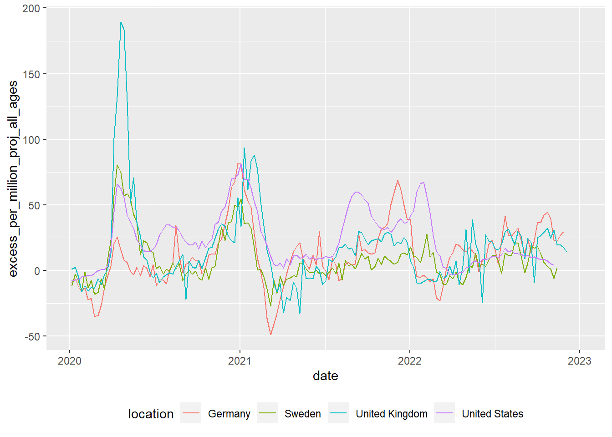

Quantitative methods in the context of STEM education research
MA STEM Education
1 Introduction to quantitative methods
This session will introduce you to the assumptions that underpin quantitative research.
1.1 Seminar Tasks
1.1.1 Task 1
In the seminar we will consider this paper:
Pasha-Zaidi and Afari (2016)
Reflect on:
- What values are implied by and issues arise from the authors’ construction of quantitative variables of ‘teacher professionalism’ and ‘teacher warmth’?
- To what extent does the authors’ survey validly probe the variables of ‘teacher professionalism’ and ‘teacher warmth’?

- What other critiques of the study can you propose?
1.1.2 Task 2
The second task considers this paper: Gibson and Dembo (1984)
For the purpose of discussion, teacher efficacy has been defined as “the extent to which the teacher believes he or she has the capacity to affect student performance” (Berman et al. 1977, 137)
1.1.3 Tool

1.1.4 Findings

1.1.5 To discuss
- Does teacher efficacy measure a discrete aspect of teachers’ beliefs? Does that matter?
- Does the construct have validity? I.e., does the questionnaire measure what it claims to?
- What issues arises from quantifying teacher efficacy?
- What alternatives are there to quantitative measures of teacher efficacy? What are their advantages and limitations?
1.2 Activity 3: A false dualism?
“‘Quantitative’ and ‘qualitative’ are frequently seen in opposition…. The contrast is drawn between the objective world (out there independently of our thinking about it) and the subjective worlds (in our heads, as it were, and individually constructed); between the public discourse and private meanings; between reality unconstructed by anyone and the ‘multiple realities’ constructed by each individual. The tendency to dichotomise in this way is understandable but misleading.” (Pring 2000, 248)
1.2.1 Discussion Questions
- What are the differing assumptions of qualitative and quantitative educational research?
- Are the two ‘paradigms’ completely distinct? Is the distinction helpful?
- How should a researcher choose what approach to use?
2 Introduction to R
2.1 Introduction
This short course aims to take you through the process of writing your first programs in the R statistical programming language to analyse national and international educational datasets. To do this we will be using the R Studio integrated development environment (IDE), a desktop application to support you in writing R scripts. R Studio supports your programming by flagging up errors in your code as you write it, and helping you manage your analysis environment by giving you quick access to tables, objects and graphs as you develop them. In addition, we will be looking at data analysis using the tidyverse code packages. The tidyverse is a standardised collection of supporting code that helps you read data, tidy it into a usable format, analyse it and present your findings.
The R programming language offers similar functionality to an application based statistical tool such as SPSS, with more of a focus on you writing code to solve your problems, rather than using prebuilt tools. R is open source, meaning that it is free to use and that lots of people have written code in R that they have shared with others. R statistical libraries are some of the most comprehensive in existence. R is popular1 in academia and industry, being used for everything from sales modelling to cancer detection.
# This example shows how R can pull data directly from the internet
# tidy it and start making graphs. All within 9 lines of code
library(tidyverse)
education <- read_csv(
"https://barrolee.github.io/BarroLeeDataSet/BLData/BL_v3_MF.csv")
education %>%
filter(agefrom == 15, ageto == 24,
country %in% c("Germany","France","Italy","United Kingdom")) %>%
ggplot(aes(x=year, y=yr_sch, colour=country)) +
geom_point() +
geom_line()
Whilst it is possible to use R through menu systems and drop down tools, the focus of this course is for you to write your own R scripts. These are text files that will tell the computer how to go through the process of loading, cleaning, analysing and presenting data. The sequential and modular nature of these files makes it very easy to develop and test each stage separately, reuse code in the future, and share with others.
This booklet is written with the following sections to support you:
[1] Code output appears like thisCourier font indicates keyboard presses, column names, column values and function names.
<folder> Courier font within brackets describe values that can be passed to functions and that you need to define yourself. I.e. copying and pasting these code chunks verbatim won’t work!
specifies things to note
gives warning messages
highlights issues that might break your code
gives suggestions on how to do things in a better way
2.2 Getting set up
2.2.1 Installation (on your own machine)
-
Install R (default settings should be fine)
Install RStudio, visit here and it should present you with the version suitable for your operating system.
(If the above doesn’t work follow the instructions here)
2.2.2 Installation (KCL restricted machine)
load the software center
-
Search for and install “R Statistics”

-
Search for and install “RStudio”

You might find this tutorial video helpful:
https://vimeo.com/203516510
2.2.3 Setting up RStudio and the tidyverse
Open RStudio
-
On the bottom right-hand side, select Packages, then select Install, then type “tidyverse” into the Packages field of the new window:

Click Install and you should see things happening in the console (bottom left). Wait for the console activity to finish (it’ll be downloading and checking packages).
-
Add a new R Script using the
 button
button
-
In the new R script, write the following:

-
Select all the lines and press
ControlorCommandandEnteron your keyboard at the same time. Alternatively, press the button
button
-
Check that you have the following in the console window:

That’s it, you should be set up!
Any issues, please mail peter.kemp@kcl.ac.uk and richard.brock@kcl.ac.uk
2.3 Starting to code
After adding a new R Script using the button  , there are four parts to R Studio’s interface. For the moment we are most interested in the Script file section, top left.
, there are four parts to R Studio’s interface. For the moment we are most interested in the Script file section, top left.

2.4 Your first program
2.4.1 Objects and instructions
In programming languages we can attach data to a name, this is called assigning a value to an object (you might also call them variables). To do this in R we use the <- arrow command. For example, I want to put the word "Pete" into an object called myname (note that words and sentences such as "Pete" need speech marks):
We can also perform quick calculations and assign them to objects:
Type the two examples above into your RStudio script file and check that they work. Adapt them to say your full name and give the number of MinutesInADay
Remember to select code and press control or command and Enter to run it
Objects can form part of calculations, for example, the code below shows how we can use the number HoursInYear to (roughly!) calculate the number of HoursInWeek:
Notice from the above we can perform the main arithmetic commands using keyboard symbols: + (add); - (minus); * (multiply); / (divide); ^ (power)
Objects can change values when you run code. For example in the code below:
What’s going on here?
- line 1 sets
ato equal 2000 (note: don’t use commas in writing numbersa <- 2,000would bring up an error), - line 2 sets
bto equal 5, - line 4 overwrites the value of
awith the value stored inb, making objectanow equal to 5 - line six is now
5 * 5
2.4.1.1 Questions
what are the outputs of the following code snippets/what do they do? One of the examples might not output anything, why is that? Type the code into your script file to check your answers:
code example 1
code example 2
code example 3
2.4.2 Naming objects
Correctly naming objects is very important. You can give an object almost any name, but there are a few rules to follow:
- Name them something sensible
- R is case sensitive,
myNameis not equal to (!=)myname - Don’t use spaces in names
- Don’t start a name with a number
- Keep punctuation in object names to underscore (
_and full stop.) e.g.my_name,my.name2. - Stick to a convention for all your objects, it’ll make your code easier to read, e.g.
-
myName,yourName,ourName(this is camelCase 3) -
my_name,your_name,our_name
-
The actual name of an object has no effect on what it does (other than invalid names breaking your program!). For example age <- "Barry" is perfectly valid to R, it’s just a real pain for a human to read.
2.4.2.1 Questions
Which of these are valid R object names:
my_Numbermy-NumbermyNumber!first nameFIRSTnamei3namesnames3
For more information on the R programming style guide, see this
2.5 Datatypes
We have already met two different datatypes, the character datatype for words and letters (e.g. "Peter") and the numeric datatype for numbers (e.g. 12). Datatypes tell R how to handle data in certain circumstances. Sometimes data will be of the wrong datatype and you will need to convert between datatypes.
weeks <- 4
days_in_week <- "7"
# we now attempt to multiply a number by a string
# but it doesn't work!
total_days <- weeks * days_in_week Error in weeks * days_in_week: non-numeric argument to binary operatorWhilst R will understand what to do when we multiply numbers with numbers, it gets very confused and raises an error when we try to perform an arithmetic operation using words and numbers.
To perform the calculation we will need to convert the days_in_week from a string to a number, using the as.numeric(<text>) command:
There is a logical datatype for boolean values of TRUE and FALSE. This will become a lot more useful later.
legs_snake <- TRUE # you can specify logical values directly
dogs_legs <- 4
legs_dog <- dogs_legs > 0 # or as part of a calculation
# Do dog's have legs?
print(legs_dog)[1] TRUEThere are actually three datatypes for numbers in R, numeric for most of your work, the rarer integer specifically for whole numbers and the even rarer complex for complex numbers. When you are looking at categorical data, factors are used on top of the underlying datatype to store the different values, for example you might have a field of character to store countries, factors would then list the different countries stored in this character field.
To change from one datatype to another we use the as.____ command: as.numeric(<text>), as.logical(<data>), as.character(<numeric>).
2.5.0.1 Questions
- Can you spot the error(s) in this code and fix them so it outputs: “July is month 7”?
- Can you spot the error(s) in this code and fix it?
- Can you spot the error(s) in this code and fix it?
If you want to find out the datatype of an object you can use the structure str command to give you more information about the object. In this instance chr means that month is of character datatype and num means it is of the numeric datatype.
2.5.1 Vectors
So far we have seen how R does simple calculations and prints out the results. Underlying all of this are vectors. Vectors are data structures that bring together one or data elements of the same datatype. E.g. we might have a numeric vector recording the grades of a class, or a character vector storing the gender of a set of students. To define a vector we use c(<item>, <item>, ...), where c stands for combine. Vectors are very important to R4, even declaring a single object, x <- 6, is creating a vector of size one. Larger vectors look like this:
You can quickly perform calculations across whole vectors:
[1] "f" "m" "m" "f" "m" "f" "m"[1] 6 5 5 2 8 6 9We can also perform calculations across vectors, in the example below we can find out which students got a better grade in Maths than in English.
# this compares each pair of values
# e.g. the first item in maths_grade (5) with
# the first item in english_grade (8)
# and so on
# This returns a logical vector of TRUE and FALSE
maths_grade > english_grade[1] FALSE FALSE TRUE FALSE TRUE FALSE FALSE# To work out how many students got a better grade
# in maths than in English we can apply sum()
# to the logical vector.
# We know that TRUE == 1, FALSE == 0,
# so sum() will count all the TRUEs
sum(maths_grade > english_grade)[1] 2# if you want to find out the average grade for
# each student in maths and english
# add both vectors together and divide by 2
(maths_grade + english_grade) / 2[1] 6.5 4.5 3.5 1.5 5.0 5.5 8.5# we can use square brackets to pick a value from a vector
# vectors start couting from 1, so students[1] would pick Jo
students[1][1] "Joe"# we can pass a numeric vector to a another vector to create a
# subset, in the example below we find the 3rd and 5th item
students[c(3,5)][1] "Mo" "Olu"# we can also use a vector of TRUE and FALSE to pick items
# TRUE will pick an item, FALSE will ignore it
# for each maths_grade > english_grade that is TRUE
# the name in that position in the student vector will be shown
students[maths_grade > english_grade][1] "Mo" "Olu"You should be careful when trying to compare vectors of different lengths. When combining vectors of different lengths, the shorter vector will match the length of the longer vector by wrapping its values around. For example if we try to combine a vector of the numbers 1 ot 10 with a two item logical vector TRUE FALSE, the logical vector will repeat 5 times: c(TRUE, FALSE, TRUE, FALSE, TRUE, FALSE, TRUE, FALSE, TRUE, FALSE). We can use this vector as a mask to return the odd numbers, TRUE means keep, FALSE means ignore:
nums <- c(1,2,3,4,5,6,7,8,9,10)
mask <- c(TRUE, FALSE)
# you can see the repeat of mask by pasting them together
paste(nums, mask) [1] "1 TRUE" "2 FALSE" "3 TRUE" "4 FALSE" "5 TRUE" "6 FALSE"
[7] "7 TRUE" "8 FALSE" "9 TRUE" "10 FALSE"[1] 1 3 5 7 9This might not seem very useful, but it comes in very handy when we want to perform a single calculation across a whole vector. For example, we want to find all the students who achieved grade 5 in English, the below code creates a vector of 5s the same size as english_grade:
# this can also be rewritten english_grade >= c(5)
# note, when we are doing a comparison, we need to use double ==
students[english_grade == 5][1] "Al"[1] "Al"When we are doing a comparison, we need to use double == equals sign. Using a single equals sign is the equivalent of an assignment = is the same as <-
There are several shortcuts that you can take when creating vectors. Instead of writing a whole sequence of numbers by hand, you can use the seq(<start>, <finish>, <step>) command. For example:
This allows for some pretty short ways of solving quite complex problems, for example if you wanted to know the sum of all the multiples of 3 and 5 below 1000, you could write it like this:
Another shortcut is writing T, F, or 1, 0 instead of the whole words TRUE, FALSE:
2.5.2 Questions
- Can you spot the four problems with this code:
answer
nums <- c(1,2,3,4,7,2,2)
#1 a vector is declared using c(), not v()
#2 3 should be numeric, so no need for speech marks
# (though technically R would do this conversion for you!)
sum(nums)
mean(nums)
# return a vector of all numbers greater than 2
nums[nums >= 2] #3 to pick items from another vector, use square brackets- Create a vector to store the number of glasses of water you have drunk for each day in the last 7 days. Work out:
- the average number of glasses for the week,
- the total number of glasses,
- the number of days where you drank less than 2 glasses (feel free to replace water with your own tipple: wine, coffee, tea, coke, etc.)
- Using the vectors below, create a program that will find out the average grade for females taking English:
2.5.3 Summary questions
Now you have covered the basics of R, it’s time for some questions to check your understanding. These questions will cover all the material you have read so far and don’t be worried if you need to go back and check something. Exemplar answers are provided, but don’t worry if your solution looks a little different, there are often multiple ways to achieve the same outcome.
- Describe three datatypes that you can use in your program?
- What are two reasons that you might use comments?
-
Which object names are valid?
my_nameyour nameour-nameTHYname
- Can you spot the four errors in this code:
- [Extension] Calculate the number of seconds since 1970.
2.6 Packages and libraries
R comes with some excellent statistical tools, but often you will need to supplement them with packages5 . Packages contain functionality that isn’t built into R by default, but you can choose to load or install them to meet the needs of your tasks. For example you have code packages to deal with SPSS data, and other packages to run machine learning algorithms. Nearly all R packages are free to use!
2.6.1 Installing and loading packages
To install a package you can use the package tab in the bottom right-hand panel of RStudio and follow the steps from Section 2.2.3. Alternatively you can install things by typing:
Note that the instruction is to install packages, you can pass a vector of package names to install multiple packages at the same time:
Once a package is installed it doesn’t mean that you can use it, yet. You will need to load the package. To do this you need to use the library(<package_name>) command, for example:
Some packages might use the same function names as other packages, for example select might do different things depending on which package you loaded last. As a rule of thumb, when you start RStudio afresh, make sure that you load the tidyverse package after you have loaded all your other packages. To read more about this problem see Section 11.1
2.7 The tidyverse
This course focuses on using the tidyverse; a free collection of programming packages that will allow you to write code that imports data, tidys it, transforms it into useful datasets, visualises findings, creates statistical models and communicates findings to others data using a standardised set of commands.

For many people the tidyverse is the main reason that they use R. The tidyverse is used widely in government, academia, NGOs and industry, notable examples include the Financial Times and the BBC. Code in the tidyverse can be (relatively) easily understood by others and you, when you come back to a project after several months.
# load the tidyverse packages
library(tidyverse)
# download Covid data from website
deaths <- read.csv("https://raw.githubusercontent.com/owid/covid-19-data/master/public/data/excess_mortality/excess_mortality.csv")
deaths <- deaths %>%
filter(location %in%
c("United States", "United Kingdom",
"Sweden", "Germany")) %>%
mutate(date = as.Date(date))
ggplot(data=deaths) +
geom_line(aes(x = date,
y = excess_per_million_proj_all_ages,
colour=location)) +
theme(legend.position="bottom")
The code above transforms data and converts it into a graph. It doesn’t have any comments, but you should hopefully be able to understand what a lot of the code does by just reading it. Can you guess what each line does? Try running the code by selecting parts of it and pressing control | command and Enter
2.8 Loading data
We can’t do much with R without loading data from elsewhere. Data will come in many formats and R should be able to deal with all of them. Some of the datasets you access will be a few rows and columns; others, like the ones we are going to use on this course, might run into hundreds of thousands or even millions of rows and hundreds or thousands of columns. Depending on the format you are using, you might need to use specific packages. A few of the data file types you might meet are described below:
| File type | Description |
|---|---|
| Comma separated values [.csv] | As it says in the name, .csv files store data by separating data items with commas. They are a common way of transferring data and can be easily created and read by Excel, Google spreadsheets and text editors (in addition to R). CSVs aren’t compressed so will generally be larger than other file types. They don’t store information on the types of data stored in the file so you might find yourself having to specify that a date column is a date, rather than a string of text. You can read and write csv files without the need to load any packages, but if you do use readr you might find things go much faster. |
| Excel [.xls | .xlsx | .xlsxm] | Excel files store data in a compressed custom format. This means files will generally be smaller than CSVs and will also contain information on the types of data stored in different columns. R can read and write these files using the openxlsx package, but you can also use the tidyverse’s readxl for reading, and writexl for writing for excel formats. |
| R Data [.rds] | R has it’s own data format, .rds. Saving to this format means that you will make perfect copies of your R data, including data types and factors. When you load rds files they will look exactly the same as when you saved them. Data can be highly compressed and it’s one of the fastest formats for getting data into R. You can read and write rds files without the need to load any packages, but using the functions in readr might speed things up a bit. You won’t be able to look at .rds files in other programs such as excel |
| SPSS [.sav] | SPSS is a common analysis tool in the world of social science. The native format for SPSS data is .sav. These files are compressed and include information on column labels and column datatypes. You will need either the haven or foreign packages to read data into R. Once you have loaded the .sav you will probably want to convert the data into a format that is more suitable for R, normally this will involve converting columns into factors. We cover factors in more detail below. |
| Stata [.dta] |
haven or foreign packages to read data into R |
| SAS [.sas] |
haven or foreign packages to read data into R |
| Structured Query Language [.sql] | a common format for data stored in large databases. Normally SQL code would be used to query these, you can use the tidyverse to help construct SQL this through the package dbplyr which will convert your tidyverse pipe code into SQL. R can be set up to communicate directly with databases using the DBI package. |
| JSON | A popular format for sharing data on the web. You can use jsonlite and rjson to access this type of data |
For this course we will be looking at .csv, excel and .rds files.
2.8.1 Dataframes
Loading datasets into R will normally store them as dataframes (also known as tibbles when using the tidyverse). Dataframes are the equivalent of tables in a spreadsheet, with rows, columns and datatypes. First we need to get some data into R so we can start analysing them.
Core to the tidyverse is the idea of tidy data, a rule of thumb for creating datasets that can be easily manipulated, modeled and presented. Tidy data are datasets where each variable is a column and each observation a row.
This data isn’t tidy data as each row has contains multiple exam results (observations):
| ID | Exam 1 | Grade 1 | Exam 2 | Grade 2 |
|---|---|---|---|---|
| R2341 | English | 4 | Maths | 5 |
| R8842 | English | 5 |
This dataframe is tidy data as each student has one entry for each exam:
| ID | Exam | Grade |
|---|---|---|
| R2341 | English | 4 |
| R2341 | Maths | 5 |
| R8842 | English | 5 |
We can load large datatables into R by either providing the online web address, or by loading it from a local file directory on your hard drive. Both methods are covered below:
2.8.2 Loading data from the web
To download files from the web we need another package, openxlsx, which you need to install before you load it (see: Section 2.2.3, or use line 1 below). The code shown will download the files from an online Google drive directly into objects in R using read.xlsx(<file_web_address>, <sheet_name>):
To convert data on your google drive into a link that works in R, you can use the following website: https://sites.google.com/site/gdocs2direct/. Note that not all read/load commands in R will work with web addresses and some will require you have to copies of the datasets on your disk drive. Additionally, downloading large datasets from the web directly into R can be very slow, loading the dataset from your harddrive will nearly always be much faster.
2.8.3 Loading data from your computer
Downloading files directly from web addresses can be slow and you might want to prefer to use files saved to your computer’s hard drive. You can do this by following the steps below:
Download the PISA_student_2018.rds file from here and save it to your computer where your R code file is.
Copy the location of the file (see next step for help)
-
To find the location of a file in Windows do the following:
-
Navigate to the location of the file in Windows Explorer:

-
Click on the address bar

Copy the location
-
-
To find the location of a file in Mac OSX do the following:
Open Finder
Navigate to the folder where you saved the Excel file
-
Right click on the folder where the file is stored and click to open the menu. Then press the option button and select
Copy <name of file> as Pathname
Alternatively, follow this
To load the data into R we need to use the read_excel(<file_location>, <sheet_name>) command, specifying the location and name of the file we are loading, and as we are reading an Excel file, we need to specify the sheet name within the Excel file. See the following code:
# load the basic tidyverse libraries and readxl
# readxl is for reading and writing Excel files
# and not loaded by the tidyverse by default
library(tidyverse)
library(readxl)
# note that we need to add /dfe_data.xlsx to the end of the file location
results <- read_excel("c:/Users/Peter/Google Drive/Kings/R intro/code/dfe_data.xlsx", "Results")
schools <- read_excel("c:/Users/Peter/Google Drive/Kings/R intro/code/dfe_data.xlsx", "Schools")2.8.4 Setting working directories
Using the setwd(<location>) you can specify where R will look by default for any datasets. In the example below, the dfe_data.xlsx will have been downloaded and stored in C:/Users/Peter/code. By running setwd("C:/Users/Peter/code") R will always look in that location when trying to load files, meaning that read_excel("dfe_data.xlsx", "Results") is actually the same as read_excel("C:/Users/Peter/code/dfe_data.xlsx", "Results")
# context: setup
# load the basic tidyverse libraries and readxl
# readxl is for reading and writing Excel files
# and not loaded by the tidyverse by default
library(tidyverse)
library(readxl)
# set the working directory to be where your data is stored
# note that you need to convert the backslashes \ in the address to forwardslashes /
setwd("C:/Users/Peter/code")
# then load the Results and Schools sheets from dfe_data.xlsx
results <- read_excel("dfe_data.xlsx", "Results")
schools <- read_excel("dfe_data.xlsx", "Schools")To work out what your current working directory is, you can use getwd().
2.8.5 Proper addresses
You might have found that you get an error if you don’t convert your backslashes \ into forwardslashes /. It’s common mistake and very annoying. In most programming languages a backslash signifies the start of a special command, for example \n signifies a newline.
With R there are three ways to get around the problem of backslashes in file locations, for the location:"C:\myfolder\" we could:
- replace them with forwardslashes (as shown above):
"C:/myfolder/" - replace them with double backslashes (the special character specified by two backslashes is one backslash!):
"C:\\myfolder\\" - use the inbuilt R command to deal with filenames:
r"[C:\myfolder\]"
2.8.6 Dealing with .rds files
For the majority of this workbook you will be using a cutdown version of the PISA_2018 student table. This dataset is huge and we have loaded it into R, selected fields we think are useful, converted column types to work with R and saved in the standard R format. .rds files are quick to load and small in size. To load an .rds file you can use the read_rds(<location>) command from the tidyverse.
If you want to save out any of your findings, you can use write_rds(<object>, <location>, <compression>), where object is the table you are working on, location is where you want to save it, and compression is specifying whether you want to save space by making it smaller on your hard disk, but slower to load. Compression can be the value: “none” for no compression and “bz2” for compression.
2.8.7 Exploring data
Now that we have loaded the PISA_2018 dataset we can start to explore it.
You can check that the tables have loaded correctly by typing the object name and ‘running’ the line (control|command and Enter)
# A tibble: 612,004 × 204
CNT OECD ISCEDL ISCEDD ISCEDO PROGN WVARS…¹ COBN_F COBN_M COBN_S GRADE
<fct> <fct> <fct> <fct> <fct> <fct> <dbl> <fct> <fct> <fct> <fct>
1 Albania No ISCED l… C Vocat… Alba… 3 Alban… Alban… Alban… 0
2 Albania No ISCED l… C Vocat… Alba… 3 Alban… Alban… Alban… 0
3 Albania No ISCED l… C Vocat… Alba… 3 Alban… Alban… Alban… 0
4 Albania No ISCED l… C Vocat… Alba… 3 Alban… Alban… Alban… 0
5 Albania No ISCED l… C Vocat… Alba… 3 Alban… Alban… Alban… 0
6 Albania No ISCED l… C Vocat… Alba… 3 Alban… Alban… Alban… 0
7 Albania No ISCED l… C Vocat… Alba… 3 Missi… Missi… Missi… 0
8 Albania No ISCED l… C Vocat… Alba… 3 Alban… Alban… Alban… 0
9 Albania No ISCED l… C Vocat… Alba… 3 Alban… Alban… Alban… 0
10 Albania No ISCED l… C Vocat… Alba… 3 Missi… Missi… Missi… 0
# … with 611,994 more rows, 193 more variables: SUBNATIO <fct>, STRATUM <fct>,
# ESCS <dbl>, LANGN <fct>, LMINS <fct>, OCOD1 <fct>, OCOD2 <fct>,
# REPEAT <fct>, CNTRYID <fct>, CNTSCHID <dbl>, CNTSTUID <dbl>, NatCen <fct>,
# ADMINMODE <fct>, LANGTEST_QQQ <fct>, LANGTEST_COG <fct>, BOOKID <fct>,
# ST001D01T <fct>, ST003D02T <fct>, ST003D03T <fct>, ST004D01T <fct>,
# ST005Q01TA <fct>, ST007Q01TA <fct>, ST011Q01TA <fct>, ST011Q02TA <fct>,
# ST011Q03TA <fct>, ST011Q04TA <fct>, ST011Q05TA <fct>, ST011Q06TA <fct>, …We can see from this that the tibble (another word for dataframe, basically a spreadsheet table) is 612004 rows, with 204 columns 6. This is data for all the students from around the world that took part in PISA 2018. The actual PISA dataset has many more columns than this, but for the examples here we have selected 204 of the more interesting data variables. The column names might seem rather confusing and you might want to refer to the PISA 2018 code book to find out what everything means.
The data shown in the console window is only the top few rows and first few columns. To see the whole table click on the Environment panel and the table icon  to explore each table:
to explore each table:
TODO: insert images here
Alternatively, you can also hold down command|control and click on the table name in your R Script to view the table. You can also type view(<table_name>).
To learn more about loading data from in other formats, e.g. SPSS and STATA, look at the tidyverse documentation for haven.
The PISA_2018 dataframe is made up of multiple columns, with each column acting like a vector, which means each column stores values of only one datatype. If we look at the first four columns of the schools table, you can see the CNTSTUID, ESCS and PV1MATH columns are <dbl> (numeric) and the other three columns are of <fctr> (factor), a special datatype in R that helps store categorical and ordinal variables, see Section 2.9 for more information on how factors work.
# A tibble: 5 × 5
CNTSTUID ST004D01T CNT ESCS PV1MATH
<dbl> <fct> <fct> <dbl> <dbl>
1 800251 Male Albania 0.675 490.
2 800402 Male Albania -0.757 462.
3 801902 Female Albania -2.51 407.
4 803546 Male Albania -3.18 483.
5 804776 Male Albania -1.76 460.Vectors are data structures that bring together one or more data elements of the same datatype. E.g. we might have a numeric vector recording the grades of a class, or a character vector storing the gender of a set of students. To define a vector we use c(item, item, ...), where c stands for combine. Vectors are very important to R, even declaring a single object, x <- 6, is creating a vector of size one. To find out more about vectors see: Section 2.5.1
We can find out some general information about the table we have loaded. nrow and ncol tell you about the dimensions of the table
[1] 612004[1] 204If we want to know the names of the columns we can use the names() command that returns a vector. This can be a little confusing as it’ll return the names used in the dataframe, which can be hard to interpret, e.g. ST004D01T is PISA’s way of encoding gender. You might find the labels in the view of the table available through view(PISA_2018) and the Environment panel easier to navigate:
[1] "CNT" "OECD" "ISCEDL" "ISCEDD" "ISCEDO"
[6] "PROGN" "WVARSTRR" "COBN_F" "COBN_M" "COBN_S"
[11] "GRADE" "SUBNATIO" "STRATUM" "ESCS" "LANGN"
[16] "LMINS" "OCOD1" "OCOD2" "REPEAT" "CNTRYID"
[21] "CNTSCHID" "CNTSTUID" "NatCen" "ADMINMODE" "LANGTEST_QQQ"
[26] "LANGTEST_COG" "BOOKID" "ST001D01T" "ST003D02T" "ST003D03T"
[31] "ST004D01T" "ST005Q01TA" "ST007Q01TA" "ST011Q01TA" "ST011Q02TA"
[36] "ST011Q03TA" "ST011Q04TA" "ST011Q05TA" "ST011Q06TA" "ST011Q07TA"
[ reached getOption("max.print") -- omitted 164 entries ]As mentioned, the columns in the tables are very much like a collection of vectors, to access these columns we can put a $ [dollar sign] after the name of a table. This allows us to see all the columns that table has, using the up and down arrows to select, press the Tab key to complete:

[1] Male Male Female Male Male Female Female Male Female Female
[11] Female Female Female Female Male Female Male Male Male Male
[21] Male Male Female Male Male Female Male Female Male Male
[31] Female Female Female Female Female Male Male Male Male Female
[ reached getOption("max.print") -- omitted 611964 entries ]
attr(,"label")
[1] Student (Standardized) Gender
Levels: Female Male Valid Skip Not Applicable Invalid No ResponseWe can apply functions to the returned column/vector, for example: sum, mean, median, max, min, sd, round, unique, summary, length. To find all the different/unique values contained in a column we can write:
[1] Albania United Arab Emirates Argentina
[4] Australia Austria Belgium
[7] Bulgaria Bosnia and Herzegovina Belarus
[10] Brazil Brunei Darussalam Canada
[13] Switzerland Chile Colombia
[16] Costa Rica Czech Republic Germany
[19] Denmark Dominican Republic Spain
[22] Estonia Finland France
[25] United Kingdom Georgia Greece
[28] Hong Kong Croatia Hungary
[31] Indonesia Ireland Iceland
[34] Israel Italy Jordan
[37] Japan Kazakhstan Korea
[40] Kosovo
[ reached getOption("max.print") -- omitted 40 entries ]
82 Levels: Albania United Arab Emirates Argentina Australia Austria ... VietnamWe can also combine commands, with length(<vector>) telling you how many items are in the unique(PISA_2018$CNT) command
You might meet errors when you try and run some of the commands because a field has missing data, recorded as NA. In the case below it doesn’t know what to do with the NA values in PV1MATH, so it gives up and returns NA:
You can see the NAs by just loking at this column:
[1] 0.6747 -0.7566 -2.5112 -3.1843 -1.7557 -1.4855 NA -3.2481 -1.7174
[10] NA -1.5617 -1.9952 -1.6790 -1.1337 NA NA -1.0919 -1.2391
[19] -0.1641 -0.4510 -0.9622 -0.8303 -1.8772 -1.2963 -1.4784 -2.3759 -0.8440
[28] -1.2251 NA -2.4655 -1.2018 -0.4426 -1.4634 -2.1813 -1.9087 -1.7194
[37] -2.7486 -2.0457 -1.8321 -1.8647
[ reached getOption("max.print") -- omitted 611964 entries ]
attr(,"label")
[1] "Index of economic, social and cultural status"To get around this you can tell R to remove/ignore the NA values when performing maths calculations:
R’s inbuilt mode function doesn’t calculate the mathematical mode, instead it tells you what type of data you are dealing with. You can work out the mode of data by using the modeest package:
there is more discussion on how to use modes in R here
Calculations might also be upset when you try to perform maths on a column that is stored as another datatype. For example if you wanted to work out the mean common number of minutes spent learning the language that the PISA test was sat in, e.g. number of hours of weekly English lessons in England:
Warning in mean.default(PISA_2018$LMINS): argument is not numeric or logical:
returning NA[1] NALooking at the structure of this column, we can see it is stored as a factor, not as a numeric
Factor w/ 336 levels "0","10","15",..: 38 81 38 38 150 66 NA NA 81 NA ...
- attr(*, "label")= chr "Learning time (minutes per week) - <test language>"So we need to change the type of the column to make it work with the mean command, changing it to as.numeric(<column>) for the calculation, for more details on datatypes, see Section 2.5.
# this isn't ideal for proper analysis as you will need to remove all the "No Response" data
mean(as.numeric(PISA_2018$LMINS), na.rm = TRUE)[1] 91.22474To get a good overview of what a table contains, you can use the str(<table_name>) and summary(<table_name>) commands.
2.9 Factors and statistical data types
The types of variable will heavily influence what statistical analysis you can perform. R is there to help by assigning datatypes to each field. We have different sorts of data that can be stored:
-
Categorical - data that can be divided into groups or categories
- Nominal - categorical data where the order isn’t important, e.g. gender, or colours
- Ordinal - categorical data that may have order or ranking, e.g. exam grades (A, B, C, D) or lickert scales (strongly agree, agree, disgaree, strongly disagree)
-
Numeric - data that consists of numbers
- Continuous - numeric data that can take any value within a given range, e.g. height (178cm, 134.54cm)
- Discrete - numeric data that can take only certain values within a range, e.g. number of children in a family (0,1,2,3,4,5)
R can support these by changing the datatype as we saw earlier to a numeric type:
# A tibble: 1 × 1
lmins_mean
<dbl>
1 91.2But here we are going to look at how R handles factors. Factors have two parts, levels and codes. levels are what you see when you view a table column, codes are an underlying order to the data. Factors allow you to store data that has a known set of values taht you might want to display in an order other than alphabetical. For example, if we look at the month field ST003D02T using the levels(<field>) command:
[1] "January" "February" "March" "April"
[5] "May" "June" "July" "August"
[9] "September" "October" "November" "December"
[13] "Valid Skip" "Not Applicable" "Invalid" "No Response" We can see that the months of the year are there along with other possible levels.
Codes are the underlying numbers/order for each level, in this case 1 = January, 2 = February, etc.
[1] 2 7 4 4 3 2 7 8 3 7 12 1 12 6 3 12 3 6 8 12 7 8 8 9 10
[26] 11 6 4 9 4 1 2 9 5 12 5 1 2 10 9
[ reached getOption("max.print") -- omitted 611964 entries ]How can this be useful? A good example is how plots are made, they will use the codes to give an order to the display of columns, in the plot below, February (2) comes before March (3), even though there were more students born in March:
grph_data <- PISA_2018 %>%
group_by(ST003D02T) %>%
summarise(n=n())
ggplot(data=grph_data, aes(x=ST003D02T, y=n)) +
geom_bar(stat = "identity")
To re-order the columns to match the number of students, we can either try to do this manually, which is rather cumbersome:
my_levels <- c("July", "September", "January", "March", "February","April", "May", "June", "August", "October", "November", "December", "Valid Skip", "Not Applicable", "Invalid", "No Response")
grph_data$ST003D02T <- factor(grph_data$ST003D02T, levels=my_levels)
ggplot(data=grph_data, aes(x=ST003D02T, y=n)) +
geom_bar(stat = "identity")
Or get R to do this for us:
# get the levels in order and pull/create a vector of them
my_levels <- grph_data %>% arrange(desc(n)) %>% pull(ST003D02T)
# reassign the re-ordered levels to the dataframe column
grph_data$ST003D02T <- factor(grph_data$ST003D02T, levels=my_levels)
ggplot(data=grph_data, aes(x=ST003D02T, y=n)) +
geom_bar(stat = "identity")
To learn a lot more about factors, see Hadleys chapter
2.10 Piping
Piping allows us to break down complex tasks into manageable chunks that can be written and tested one after another. There are several powerful commands in the tidyverse as part of the dplyr package that can help us group, filter, select, mutate and summarise datasets. With this small set of commands we can use piping to convert massive datasets into simple and useful results.
Using the pipe %>% command, we can feed the results from one command into the next command making for reusable and easy to read code.

The pipe command we are using %>% is from the magrittr package which is installed alongside the tidyverse. Recently R introduced another pipe |> which offers very similar functionality and tutorials online might use either. The examples below use the %>% pipe.
Let’s look at an example of using the pipe on the PISA_2018 table to calculate the best performing OECD countries for maths by gender:
PISA_2018 %>%
filter(OECD == "Yes") %>%
group_by(CNT, ST004D01T) %>%
summarise(mean_maths = mean(PV1MATH, na.rm=TRUE),
sd_maths = sd(PV1MATH, na.rm=TRUE),
students = n()) %>%
filter(!is.na(ST004D01T)) %>%
arrange(desc(mean_maths))`summarise()` has grouped output by 'CNT'. You can override using the `.groups`
argument.# A tibble: 74 × 5
# Groups: CNT [37]
CNT ST004D01T mean_maths sd_maths students
<fct> <fct> <dbl> <dbl> <int>
1 Japan Male 533. 90.5 2989
2 Korea Male 530. 102. 3459
3 Estonia Male 528. 85.0 2665
4 Japan Female 523. 82.2 3120
5 Korea Female 523. 96.0 3191
6 Switzerland Male 520. 92.7 3033
7 Estonia Female 519. 76.0 2651
8 Czech Republic Male 518. 98.0 3501
9 Belgium Male 518. 95.9 4204
10 Poland Male 517. 91.8 2768
# … with 64 more rows- line 1 passes the whole
PISA_2018dataset and pipes it into the next line%>% - line 2
filtersout any results that are from non-OECD countries by finding all the rows whereOECDequals==“Yes”, this is then piped to the next line - line 3 groups the data by country
CNTand by student genderST004D01T, this is then piped to the next line - line 4-6 the
summarisecommand performs a calculation on the country and gender groupings returning three new columns, each command on a new line and separated by a comma: the mean value for mathsmean_maths, the standard deviationsd_mathsand a column telling us how many students were in each grouping using then()which returns the number of rows in a group. These new columns and the grouping columns are then piped to the next line - line 7 filters out any gender
ST004D01Tthat isNA. First is finds all the students that haveNAas their gender by usingis.na(ST004D01T), then is NOTs/flips the result using the exclamation mark!, giving those students who don’t have their gender set toNA. The filtered data is then piped to the next line - line 8, finally we
arrange/ sort the results indescending order by themean_mathscolumn. The default for arrange is ascending order, leave out thedesc( )for the numbers to be ordered in the opposite way.
Males get a slightly better maths score than Females for this PV1MATH score, other scores are available, please read Section 10.5.1 to find out more about the limitations of using this value.
we met the assignment command earlier <-. Within the tidyverse commands we use the equals sign instead =.
The commands we have just used come from a package within the tidyverse called dplyr, let’s take a look at what they do:
| command | purpose | example |
|---|---|---|
| select | reduce the dataframe to the fields that you specify (and any other grouping fields you might be using) | select(<field>, <field>, <field>) |
| filter | get rid of rows that don’t meet one or more comparisons | filter(<field> <comparison>) |
| group | group_by(<field>, <field>)) |
|
| mutate | add new fields or change current value in current fields | mutate(<new_field> = <field> / 2) |
| summarise | summarise(<new_field> = max(<field>)) |
|
| arrange | arrange(desc(<field>)) |
If you want to explore more of the functions of dplyr, take a look at the helpsheet
Adjust the code above to find out the lowest performing countries for reading PV1READ by gender that are not in the OECD
2.10.1 select
The PISA_2018 dataset has far too many fields, to reduce the number of fields to focus on just a few of them we can use select
# A tibble: 612,004 × 4
CNT ESCS ST004D01T ST003D02T
<fct> <dbl> <fct> <fct>
1 Albania 0.675 Male February
2 Albania -0.757 Male July
3 Albania -2.51 Female April
4 Albania -3.18 Male April
5 Albania -1.76 Male March
6 Albania -1.49 Female February
7 Albania NA Female July
8 Albania -3.25 Male August
9 Albania -1.72 Female March
10 Albania NA Female July
# … with 611,994 more rowsYou might also be in the situation where you want to select everything but one or two fields, you can do this with the negative signal -:
# A tibble: 612,004 × 202
ISCEDL ISCEDD ISCEDO PROGN WVARS…¹ COBN_F COBN_M COBN_S GRADE SUBNA…² STRATUM
<fct> <fct> <fct> <fct> <dbl> <fct> <fct> <fct> <fct> <fct> <fct>
1 ISCED… C Vocat… Alba… 3 Alban… Alban… Alban… 0 Albania ALB - …
2 ISCED… C Vocat… Alba… 3 Alban… Alban… Alban… 0 Albania ALB - …
3 ISCED… C Vocat… Alba… 3 Alban… Alban… Alban… 0 Albania ALB - …
4 ISCED… C Vocat… Alba… 3 Alban… Alban… Alban… 0 Albania ALB - …
5 ISCED… C Vocat… Alba… 3 Alban… Alban… Alban… 0 Albania ALB - …
6 ISCED… C Vocat… Alba… 3 Alban… Alban… Alban… 0 Albania ALB - …
7 ISCED… C Vocat… Alba… 3 Missi… Missi… Missi… 0 Albania ALB - …
8 ISCED… C Vocat… Alba… 3 Alban… Alban… Alban… 0 Albania ALB - …
9 ISCED… C Vocat… Alba… 3 Alban… Alban… Alban… 0 Albania ALB - …
10 ISCED… C Vocat… Alba… 3 Missi… Missi… Missi… 0 Albania ALB - …
# … with 611,994 more rows, 191 more variables: ESCS <dbl>, LANGN <fct>,
# LMINS <fct>, OCOD1 <fct>, OCOD2 <fct>, REPEAT <fct>, CNTRYID <fct>,
# CNTSCHID <dbl>, CNTSTUID <dbl>, NatCen <fct>, ADMINMODE <fct>,
# LANGTEST_QQQ <fct>, LANGTEST_COG <fct>, BOOKID <fct>, ST001D01T <fct>,
# ST003D02T <fct>, ST003D03T <fct>, ST004D01T <fct>, ST005Q01TA <fct>,
# ST007Q01TA <fct>, ST011Q01TA <fct>, ST011Q02TA <fct>, ST011Q03TA <fct>,
# ST011Q04TA <fct>, ST011Q05TA <fct>, ST011Q06TA <fct>, ST011Q07TA <fct>, …You might find that you have a vector of column names that you want to select, to do this, we can use the any_of command:
# A tibble: 612,004 × 3
CNTSTUID CNTSCHID ST004D01T
<dbl> <dbl> <fct>
1 800251 800002 Male
2 800402 800002 Male
3 801902 800002 Female
4 803546 800002 Male
5 804776 800002 Male
6 804825 800002 Female
7 804983 800002 Female
8 805287 800002 Male
9 805601 800002 Female
10 806295 800002 Female
# … with 611,994 more rowsWith hundreds of fields, you might want to focus on fields whose names match a certain pattern, to do this you can use starts_with, ends_with, contains:
# A tibble: 612,004 × 19
ST011Q16NA ST012Q05NA ST012…¹ ST012…² ST125…³ ST060…⁴ ST061…⁵ IC009…⁶ IC009…⁷
<fct> <fct> <fct> <fct> <fct> <dbl> <fct> <fct> <fct>
1 Yes <NA> One One 6 year… 31 45 Yes, a… No
2 Yes Three or … One None 4 years 37 45 No Yes, b…
3 No One None None 4 years NA 45 Yes, a… Yes, a…
4 No <NA> None One 1 year… 31 45 Yes, a… No
5 No One One None 3 years 80 100 Yes, a… Yes, a…
6 No Three or … One None 6 year… 24 25 Yes, a… Yes, a…
7 <NA> <NA> <NA> <NA> <NA> NA <NA> <NA> <NA>
8 No None None None 1 year… NA 45 <NA> <NA>
9 Yes Three or … One One 4 years 36 45 Yes, a… Yes, a…
10 <NA> <NA> <NA> <NA> <NA> NA <NA> <NA> <NA>
# … with 611,994 more rows, 10 more variables: IC009Q07NA <fct>,
# IC009Q10NA <fct>, IC009Q11NA <fct>, IC008Q07NA <fct>, IC008Q13NA <fct>,
# IC010Q02NA <fct>, IC010Q05NA <fct>, IC010Q06NA <fct>, IC010Q09NA <fct>,
# IC010Q10NA <fct>, and abbreviated variable names ¹ST012Q06NA, ²ST012Q09NA,
# ³ST125Q01NA, ⁴ST060Q01NA, ⁵ST061Q01NA, ⁶IC009Q05NA, ⁷IC009Q06NA- Spot the three errors with the following
selectstatement
- Write a
selectstatement to display the month and year of birth and the gender of each student.
- Write a
selectstatement to show all the fields that are to do with digital skills, e.g.IC150Q01HA
- [EXTENSION] Adjust the answer to Q3 so that you select the gender and the ID of each student
2.10.2 filter
Not only does the PISA_2018 dataset have a huge number of columns, it has hundred of thousands of rows. We want to filter this down to the students that we are interested in, i.e. filter out data that isn’t useful for our analysis. If we only wanted the results that were boys, we could do the following:
# A tibble: 307,044 × 5
CNT ESCS ST004D01T ST003D02T PV1MATH
<fct> <dbl> <fct> <fct> <dbl>
1 Albania 0.675 Male February 490.
2 Albania -0.757 Male July 462.
3 Albania -3.18 Male April 483.
4 Albania -1.76 Male March 460.
5 Albania -3.25 Male August 441.
6 Albania NA Male March 280.
7 Albania -1.09 Male March 523.
8 Albania -1.24 Male June 314.
9 Albania -0.164 Male August 428.
10 Albania -0.451 Male December 369.
# … with 307,034 more rowsWe can combine filter commands to look for Males born in September and where the PV1MATH figure is greater than 750. We can list multiple criteria in the filter by separating the criteria with commas, using commas mean that all of these criteria need to be true for a row to be returned. A comma in a filter is the equivalent of an AND, :
PISA_2018 %>%
select(CNT,ESCS, ST004D01T, ST003D02T, PV1MATH) %>%
filter(ST004D01T == "Male",
ST003D02T == "September",
PV1MATH > 750)# A tibble: 56 × 5
CNT ESCS ST004D01T ST003D02T PV1MATH
<fct> <dbl> <fct> <fct> <dbl>
1 United Arab Emirates 0.861 Male September 760.
2 Belgium 0.887 Male September 751.
3 Bulgaria -0.160 Male September 752.
4 Canada 1.38 Male September 751.
5 Canada 1.16 Male September 760.
6 Canada 0.760 Male September 770.
7 Switzerland 0.814 Male September 783.
8 Germany 0.740 Male September 762.
9 Spain 1.46 Male September 787.
10 Estonia 0.897 Male September 752.
# … with 46 more rowsyou can also write it as an ampersand &
Remember to include the == sign when looking to filter on equality; !=, >=, < etc also work.
Remember matching is case sensitive, “june” != “June”
Rather than just looking at September born students, we want to find all the students born in the Autumn term. But if we add a couple more criteria on ST003D02T nothing is returned! The reason is R is looking for inidividual students born in September AND October AND November AND December. As a student can only have one birth month there are no students that meet this criteria. We need to use OR :
PISA_2018 %>%
select(CNT,ESCS, ST004D01T, ST003D02T, PV1MATH) %>%
filter(ST004D01T == "Male",
ST003D02T == "September",
ST003D02T == "October",
ST003D02T == "November",
ST003D02T == "December",
PV1MATH > 750)# A tibble: 0 × 5
# … with 5 variables: CNT <fct>, ESCS <dbl>, ST004D01T <fct>, ST003D02T <fct>,
# PV1MATH <dbl>To create an OR in a filter we use the bar | command, the below looks for all students who are “Male” AND were born in “September” OR “October” OR “November” OR “December”, AND have a PV1MATH > 750.
PISA_2018 %>%
select(CNT,ESCS, ST004D01T, ST003D02T, PV1MATH) %>%
filter(ST004D01T == "Male",
(ST003D02T == "September" | ST003D02T == "October" | ST003D02T == "November" | ST003D02T == "December"),
PV1MATH > 750)# A tibble: 175 × 5
CNT ESCS ST004D01T ST003D02T PV1MATH
<fct> <dbl> <fct> <fct> <dbl>
1 Albania 0.539 Male October 789.
2 United Arab Emirates 0.861 Male September 760.
3 United Arab Emirates 0.813 Male October 753.
4 United Arab Emirates 0.953 Male November 766.
5 United Arab Emirates 0.930 Male November 773.
6 United Arab Emirates 1.44 Male October 752.
7 Australia 1.73 Male December 756.
8 Australia -0.0537 Male October 827.
9 Australia 1.18 Male November 758.
10 Australia 1.13 Male October 757.
# … with 165 more rowsIt’s neater, maybe, to use the %in% command, which checks to see if the value in a column is present in a vector, this can mimic the OR command:
- Spot the three errors with the following
selectstatement
- Write a
filterto create a dataframe for the number ofFemalestudents with readingPV1READscores lower than 400 in the “United Kingdom”, store the result asread_low_female, repeat but forMalestudents and store asread_low_male. Usenrow()to work out if there are more males or females with a low reading score in the UK
answer
read_low_female <- PISA_2018 %>%
filter(CNT == "United Kingdom",
PV1READ < 400,
ST004D01T == "Female")
read_low_male <- PISA_2018 %>%
filter(CNT == "United Kingdom",
PV1READ < 400,
ST004D01T == "Male")
nrow(read_low_female)
nrow(read_low_male)
# You could also pipe the whole dataframe into nrow()
PISA_2018 %>%
filter(CNT == "United Kingdom",
PV1READ < 400,
ST004D01T == "Female") %>%
nrow()- How many students in the United Kingdom had no television
ST012Q01TAOR no connection to the internetST011Q06TA.
- use of NA?
2.10.3 group_by and summarise
max, min, mean, mode na.rm = TRUE
2.10.4 mutate
PISA_2018 %>%
mutate(PV1_total = PV1MATH + PV1SCIE + PV1READ) %>%
select(CNT, ESCS, PV1_total) %>%
mutate(PV1_mean = PV1_total/3)# A tibble: 612,004 × 4
CNT ESCS PV1_total PV1_mean
<fct> <dbl> <dbl> <dbl>
1 Albania 0.675 1311. 437.
2 Albania -0.757 1319. 440.
3 Albania -2.51 1158. 386.
4 Albania -3.18 1424. 475.
5 Albania -1.76 1094. 365.
6 Albania -1.49 1004. 335.
7 Albania NA 1311. 437.
8 Albania -3.25 1104. 368.
9 Albania -1.72 1268. 423.
10 Albania NA 1213. 404.
# … with 611,994 more rowsPISA_2018 %>%
mutate(PV1READ_high = ifelse(PV1READ > 600, TRUE, FALSE)) %>%
select(CNT, ESCS, PV1READ, PV1READ_high)# A tibble: 612,004 × 4
CNT ESCS PV1READ PV1READ_high
<fct> <dbl> <dbl> <lgl>
1 Albania 0.675 376. FALSE
2 Albania -0.757 434. FALSE
3 Albania -2.51 359. FALSE
4 Albania -3.18 425. FALSE
5 Albania -1.76 306. FALSE
6 Albania -1.49 352. FALSE
7 Albania NA 413. FALSE
8 Albania -3.25 271. FALSE
9 Albania -1.72 373. FALSE
10 Albania NA 412. FALSE
# … with 611,994 more rowsREPEAT - repeat a grade
paste ifelse
2.10.5 arrange
2.10.6 unique / distinct
2.10.7 tasks
3 Performance of different groups in STEM education: Sampling and comparisons
3.1 Introduction to graphing in R
The tidyverse includes the incredibly powerful ggplot2 package. This package is pretty much the industry standard for making graphs for publication. ggplot2 is built on the grammar of graphics where you build graphs by specifying underlying attributes and layering geometric objects on top of each other. In the diagram below you can see how a graph is built from geometric objects (the things that are plotted such as points and bars) a scale, and plot annotations (e.g. a key, title etc). You can then apply faceting to the graph to automatically split one graph into multiple plots, allowing you to easily compare different groupings.

The basic structure of ggplot code is to combine different graphing elements through the use of the + operator. To demonstrate this, let’s look at the relationship between the percentage of males in a school and the percentage of the school taking computer science:
# wrangle our data
graph_data <- PISA_2018 %>%
filter(CNT %in% c("France", "United Kingdom"))
# display a graph of the results
ggplot(data=graph_data,
aes(x=ESCS, y=PV1MATH, colour=ST004D01T)) +
geom_point() +
geom_smooth(method='lm') +
facet_wrap(. ~ CNT) +
ggtitle("Comparison of poverty and Maths result, by gender and country")
Hopefully you can work out what lines 1-3 do from the previous chapter, let’s focus on the ggplot commands:
- 6-7 these lines set up the
ggplotgiving it the table objectgraph_dataas its data input and setting up the aesthetics for the rest of the graph elements using columns fromgraph_data. Theaes(<attribute>, <attribute>, ...)command allows us to specify aesthetic elements of the graph that will change dependent on the dataset we use.x=ESCSandy=PV1MATHdefine the x and y coordinates, definingaes()insideggplot()means we will pass down these values to subsequent geometric objects so we don’t have to define thesexandyaxis items again and again. - 8 using the data and
aesvalues defined on lines 6-7,geom_pointuses thexandyvalues defined on line 19 to draw a point for each school in our dataset. There are lots of different parameters we could givegeom_pointe.g. specifying size and shape, but here we are content with using the defaults. - 9 we add another geometric object on top of the points, this time we add a line of best fit
geom_smooth, again this geometric object uses the values specified on lines 6-7, and we define themethodaslm, to calculate a linear model line of best fit. - 10 next we use
facet_wrap(. ~ CNT)to create a graph for each group ofCNTin the dataset, i.e. a graph for each country defined on line 3. - 11 finally we customise the title of the graph,
ggtitle, ready for display.
3.2 Geoms
There are about 40 different geometric objects in ggplot, allowing you to create almost any sort of graph. We will be exploring a few of them in detail, but if you want to explore others, please follow some of the links below:
- geom_bar for creating bar charts and histograms
- geom_point for plotting single points
- geom_line for connecting points together and showing trends
- geom_text for adding text labels to data points
- geom_boxplot for representing the range of data
- geom_hex for creating heat maps
- geom_map for adding geographic maps
- geom_smooth for adding lines of best fit
3.2.1 geom_point
Rather unsurprisingly, geom_point allows us to plot a layer of points using x and y coordinates. The below example shows how we can specify within the ggplot function data=school_plot_data. We then define the aesthetic attributes of the graph, passing the x x=NumberOfBoys and y y=NumberOfGirls values.
# to make things a little faster we are going to focus on open secondary schools
# plotting 40k+ data points can be slow
school_plot_data <- PISA_2018 %>%
group_by(OECD, CNT) %>%
summarise(mean_maths = mean(PV1MATH),
mean_read = mean(PV1READ),
sz = n())
ggplot(data=school_plot_data,
aes(x=mean_maths, y=mean_read)) +
geom_point(aes(size=sz, colour=OECD), alpha = 0.6)
TODO: describe the code above
Switching between the pipes and ggplot can get rather confusing. A very common mistake in using ggplot is to try and link together the geom_ elements with a pipe command %>% rather than the +.
3.2.2 Questions
- Spot the three errors in this graph code
- Using the
PISA_2018dataset, plot a graph for students from Norway to help you work out whether there is a relationship between povertyESCSand maths gradePV1MATH. Colour each point with the gender of the student. Give the graph sensible x and y labels (e.g.xlab).
answer

- Using the
PISA_2018dataset for each countryCNT, create a graph to explore how themedianof the sense of school belongingBELONGrelates to themedianof the disciplinary climate in the schoolDISCLIMA, adjust the colour of each point to reflect themeanwealth of students in each countryESCS.
HINT: You’ll need create a new dataframe with summarised variables for median_belong, median_discipline and mean_wealth.
HINT: To make your colours stand out more, add + scale_color_gradientn(colours = rainbow(3)) to the end of your plot.

3.2.3 Recoding data (ifelse)
Often we want to plot values in groupings that don’t yet exist, for example might want to give all schools over a certain size a different colour from others schools. To do this we need to look at how we can recode values. A common way to recode values is through an if statement:
ifelse(<statement(s)>, <value_if_true>, <value_if_false>)
ifelse allow us to recode the data. In the example below, we are going to add a new column to the schools table (using mutate) noting whether a school is a grammar school or not. A school is a grammar school if it is not an Independent school and it is selective in its admissions policy, either of these two criteria being false will mean that the school is not a grammar school.
You can see how the above logic is is implemented in an R ifelse statement on lines 4-8.
- 4 uses mutate to create a new column in the schools table called
sch_type, this will be given the value of theifelsestatement calculation for each line. - 5 - 6 the
ifstatement to be evaluated as eithertrueorfalsehas two parts, separated by the ampersand symbol&instead of the word and (as we have seen above, or is implemented using a bar|). - 7 “GRAMMAR” will be returned
ifthe statements on line 5 and 6 are both TRUE - 8 “NOT GRAMMAR” will be returned if the combined statements on line 5 and 6 are FALSE, i.e. else the values on line 5 and 6 are true
Additionally, on line 9 we arrange the results, which means you can explore the details of the 163 grammar schools using the Environment panel, how you use arrange also changes the order in which the points will be plotted, allowing you to plot the grammar schools on top of other school types to make them stand out.
It’s possible to nest our ifelse statements, for example we might want to give a little more information on the school type:
Now we have recoded the data to display whether a school is a grammar school or not, we can plot this dataset onto the graph:
- 1 we pass the custom table
plot_datato the ggplot command, this means this data will be available in subsequentgeom_ - 2 we define the
xandyaestheic values here for thegeom_points, we could have done this on line one, but this shows that this can be done separately for eachgeom_ - 3
sizeis also insideaes()and takes theNumberOfBoys+NumberOfGirlsas a parameter, i.e. the population of the school will change the size of the points on the graph - 4
colouris also insideaes()and takes the newly codedsch_typevalues, this means that grammar schools will be a different colour from non-grammar schools - 5 to stop the schools blotting each other out, we set the
alpha(transparency) of each point to0.4. This is done outside theaesas we want all points to have the same transparency.
If you define the colour, size and alpha attributes outside the aes() function, you will hard code the values and they won’t change when your dataset changes. Placing these attributes inside aes allows them to be dynamically changed by your dataset values
3.2.4 Questions
- Using the TIMSS dataset, and only using schools from England, Finland and USA, plot to see how the number of computers
BCBG07is related to the Instruction Affected Resource Shortage (Mathematics)BCBGMRS.colourthe points in using the countryCNTRY.
- Using
ifelse, add a column to TIMSS calledregion, recode “NOR”, “SWE” and “FIN” to be “Nordic” and everyone else “RestOfWorld”.
- Using the dataset from Q2, Count the number of schools in each of the two regions and the median number of taught hours
BCDGTIHY.
- Using the data from Q2 (take a look at the answers if you couldn’t work it out), plot a graph of:
- school’s teaching time per year
BCDGTIHYagainst the behavioural issues that they haveBCBGDAS. -
colourthe points to show the difference between “Nordic” and “RestOfWorld” schools. - Provide sensible labels for the
xandyaxis - change the
alphaof each point so schools don’t blot each other out - add a line of best fit to see how the two axis are related
- school’s teaching time per year
3.2.5 geom_bar
The geom_bar function is versatile, allowing the creation of bar, multiple bar, stacked bar charts and histograms. This first example shows how we can use bar charts to represent the quality ratings given by the Office of Standards in Education (Ofsted) to schools in different parts of the country:
- 1 to 3 gets the schools dataset and filters it to only include schools that are Open, which are in recognised Region.
- 4 filters only those rows containing the OfstedRating listed, removing any
NAor other values. - 6 to 7 we pass the
plot_schoolsdataset created on lines 1 to 4 to ggplot and set thexaxis to the be the Region. Note, we don’t set theyaxis, as geom_bar will calculate this for us - 8 we pass the
plot_schoolsandx=Regiontogeom_bar, which counts the number of rows (schools) in each Region and creates a bar of that height.
The graph above gives us a feel for the data, but it doesn’t tell us the Ofsted ratings for each Region and the a axis labels are a mess. We need to add a fill to the geom_bar and adjust the theme:
- 3 using the
fillattributeaes(fill=OfstedRating)will create a stacked and coloured bar to show the number of schools gaining each OftstedRating in each Region - 4 the
themefunction andaxis.text.xadjust the x axis labels, rotating them 90 degrees
We can now make rough comparisons between the different number of each Ofsted rating. But it remains hard to compare the percentage split. For example the number of Good and Outstanding schools in London is hard to compare with the North East, as the total number of schools in the North East is much smaller than the number of schools in London. Additionally, the order of the bars seems random, we want to have Outstanding at the top and Inadequate at the bottom, not next to each other:
- 3 to 4 converts OfstedRating from the character datatype to a factor. Factors allow us to categorise the data we store, limiting the number of values a column can hold, in this case we are limiting it to the levels specified, with the order given to levels specifying the order that this column’s data will be displayed in graphs.
- 5
positiontells ggplot what to do when a bar on the x axis is made up of multiple elements, in this caseposition="fill"will take each x axis bar grouping and work out the fractional value of each Ofsted rating for each Region. - 7 when we created the factor on lines 3-4 to pass to the fill command, it also created a really inconvenient title for the graph legend: factor(OfstedRating, levels = c(“Outstanding”, “Good”, “Requires improvement”, “Inadequate”)).
scale_fill_discretelet’s us provide a more sensible title for the key.
We might also want to look at this graph on a Region by Region basis, at the moment it’s very hard to tell if the East Midlands have more schools that are Outstanding, or more schools that Require improvement. To do compare the bars in each x axis group we can use the position command, setting it to position="dodge":
3.2.5.1 Raising the bars yourself
ggplot can do a lot of the hard work when putting together bar charts, but there might also be times when you want to use pipes to calculate summary values that you then want plot. That is, you want to specify the heights of the bars yourself. To do this we will specify the y axis in the aes and use stat="indentity" to tell ggplot that’s what we’re doing. Take the example where you want to find the overall percentages of each grade given to the four single sciences in one year (can we say one is harder than another?):
plot_data <- results %>%
filter(Description %in% c("Physics", "Biology", "Chemistry", "Computer Studies/Computing"),
Qualification == "GCSE (9-1) Full Course") %>%
group_by(Description, Grade) %>%
summarise(total_grade = sum(Entries, na.rm=TRUE)) %>%
mutate(total_entries = max(total_grade, na.rm=TRUE),
per_entries = total_grade/total_entries) %>%
filter(Grade != "Total number entered")
ggplot(data=plot_data, aes(x=Grade, y=per_entries)) +
geom_bar(aes(fill=Description),
position="dodge",
stat="identity")- 1 to 8 creates a dataframe
plot_datathat calculates the percentage of entries for each science subject achieving each grade, this is calledper_entries - 10 as we are setting the heights of the bars ourselves, we need to give the ggplot aes command a y value, in this case
y=per_entries - 11 the geom_bar is given a fill value of
Description, this will allow us to see the plots of different subjects - 12 we use
position="dodge"as we want the perctange grades of each subject to be next to each other so we can look for differences in heights - 13
stat="identity"tellsgeom_barthat you have defined your own bar heights in theyattribute and not to count the number of rows.
3.2.6 Questions
- Can you spot the 4 errors in this code.
- Create a bar chart showing the total number of open Independent schools for each Gender
- Using the TIMSS dataset:
-
filterto only look at the USA and ENG - make a graph to show the overall picture of Parental expectations for student achievement (
BCBG14G). - Make the
xaxis afactorso the graph makes sense -
fillthe bars in to show how many schools each bar came from each country -
positionbars so they aren’t stacked on top of each other
-
- Repeat Q3, but this time work out the percentage of responses for each option in
BCBG14Gby country. Display a graph showing this “indentity”.
- [Extension] Explore other patterns in: “Teachers’ ability to inspire students”
BCBG14Dand “Parental expectations for student achievement”BCBG14G
3.2.7 geom_text
TODO: if time
3.3 Faceting
Faceting allows you to easily create multiple graphs from one dataset and one graph definition by splitting the data on different factors. By defining
facet_wrap(<factor_to_split> ~ .)
Let’s return to grammar school dataset from Section 3.2.3, we can easily plot this to show the relationship between poverty and school size, showing that grammar schools tend to serve quite affluent cohorts and that larger secondary schools tend to serve poorer cohorts:
plot_data <- schools %>%
filter(Open=="Open",
Phase=="Secondary") %>%
mutate(sch_type =
ifelse(EstablishmentGroup != "Independent schools" &
AdmissionsPolicy=="Selective",
"GRAMMAR",
"NOT GRAMMAR")) %>%
arrange(desc(sch_type))
ggplot(data=plot_data, aes(x=FSM, y=NumberOfBoys + NumberOfGirls)) +
geom_point(aes(colour=sch_type)) +
geom_smooth(method ="lm") +
theme(legend.position="bottom")What isn’t clear about the above is how this changes on a regional basis. We might be tempted to filter on each region and create separate charts for each regional name. But this would take a considerable amount of time and effort. Another way to do this is using facet_wrap(Region ~ .). The below example uses the Region column to create the same chart for each Region, only using the data that is recorded as being in that region:
3.4 Exporting plots
ggplot can export data in a variety of formats suitable for printing, publication and the web. Once you have created a graph and stored it in an object, the command to save the graph to your hard drive is:
ggsave(<file_name_and_extension>, <object_name>)
If you want to change the output format, just change the extension of the file you are saving:
- “poverty_size.pdf” perfect for publication and printing, large size
- “poverty_size.svg” the same as pdf, also suitable for putting on webpages
- “poverty_size.png” smaller file size, suitable for websites and presentations
- “poverty_size.jpg” same as the png
3.5 Discussion activity
Based on Davis (2013) Link to chapter

Consider how and why we think of things as being ‘normal’ (or not). Some suggested questions are: What were your immediate thoughts on reading this paper?
In what ways have you yourself been aware of being compared to norms or ideals? How do you feel about that? As an education professional, have you made comparisons between individual students and expected norms or averages? Between groups of students? When and how was this useful? When and how was this problematic?
3.6 Statistics
Using the following .csv data set and the read.csv command: DfE_SEN_School_Level
Individually:
- Select a single local authority (LA) or region, and copy-paste the data to a new sheet.
- Calculate the total number of pupils in the LA, the total number listed as receiving SEN support, and the total number with an EHC plan.
- Calculate the percentages of pupils in the SEN support and EHC plan categories.
- Find the
mean,median,maximum andminimum percentages of students with SEN support and EHC plans.
As a class: Compare results for the different areas, and also to England as a whole. How much variation is there?
Show the code
# Descriptive Statistics using the DfE SEN School Level Data
# Counting total SEN supported students in regions
DfE_SEN_data %>%
group_by(district_administrative_name) %>%
summarise(SEN_support=sum(SEN.support),
EHCplan=sum(EHC.plan),
Total=sum(Total.pupils))
# Calculating Percentages of students and finding means and modes
DfE_SEN_data %>%
group_by(district_administrative_name) %>%
summarise(SEN_support=sum(SEN.support),
EHCplan=sum(EHC.plan),
Total=sum(Total.pupils)) %>%
mutate(percentageEHCplan = (EHCplan/Total)*100,
percentagesupport = (SEN_support/Total)*100) 3.7 Statistics
Using the same data set: DfE_SEN_School_Level
Practice:
- Filtering and reorganizing data
- Calculating averages and ranges (and, optionally, quartiles, percentiles, standard deviations, etc.)
- Displaying data in different types of chart
- Comparing subsets of the data on variables that interest you (e.g. state-funded vs independent, religious denomination, girls’ vs boys’ vs mixed schools, etc.) Why might single sex schools have smaller numbers of EHC plans?
Show the code
# Presenting % on EHC by gender of school
genderplot <- DfE_SEN_data %>%
group_by(sex_of_school_description) %>%
summarise(SEN_support=sum(SEN.support),
EHCplan=sum(EHC.plan),
Total=sum(Total.pupils)) %>%
mutate(percentageEHCplan = (EHCplan/Total)*100,
percentagesupport = (SEN_support/Total)*100)
# using the genderplot data create a graph
ggplot(data=genderplot,
aes(x=sex_of_school_description,
y=percentageEHCplan)) +
geom_col()3.8 Using R to do descriptive statistics and plot graphs
You can find the code used in the video below:
Show the code
# Introduction to plotting graphs
#
# Download data from /Users/k1765032/Library/CloudStorage/GoogleDrive-richardandrewbrock@gmail.com/.shortcut-targets-by-id/1c3CkaEBOICzepArDfjQUP34W2BYhFjM4/PISR/Data/PISA/subset/Students_2018_RBDP_none_levels.rds
# You want the file: Students_2018_RBDP_none_levels.rds
# and place in your own file system
# change loc to load the data directly. Loading into R might take a few minutes
library(tidyverse)
loc <- "/Users/k1765032/Library/CloudStorage/GoogleDrive-richardandrewbrock@gmail.com/.shortcut-targets-by-id/1c3CkaEBOICzepArDfjQUP34W2BYhFjM4/PISR/Data/PISA/subset/Students_2018_RBDP_none_levels.rds"
PISA_2018 <- read_rds(loc)
# Calculating means of groups
# The PISA_2018 dataframe is piped to a new dataframe MeanPISA
# The data are grouped by the country variable (CNT)
# The countries of interest are chosen (UK, France, Germany and the US)
# The summarise function is used to output the mean and standard deviation score for each country
# on the Science Plausible Value (PV1SCIE) and NAs are ignored na.rm=TRUE
MeanPISA <- PISA_2018 %>%
group_by(CNT) %>%
filter(CNT=="United Kingdom" | CNT== "France" | CNT== "Germany" | CNT=="United States") %>%
summarise(mean_sci = mean(PV1SCIE, na.rm=TRUE), sd_sci= sd(PV1SCIE, na.rm=TRUE))
print(MeanPISA)
# To plot data we can use the ggplot function.
# We will start by plotting a column graph use geom_col
# We specify the data set for ggplot to use (MeanPisa) and then
# define the x and y variables:
# ggplot(MeanPISA,
# aes(x=CNT, y=mean_sci))
# geom_col() (Note the plus is on the line before) plots the graph and the fill colour is set to red
# The next three lines set the formatting of the axis text and add x and y axis labels
ggplot(MeanPISA,
aes(x=CNT, y=mean_sci))+
geom_col(fill="red") +
theme(axis.text.x = element_text(angle = 90, hjust=0.95, vjust=0.2, size=10)) +
xlab("Country") +
ylab("Science Score")
# For plotting a scatter plot or PISA reading scores against science scores
#, first we make a managable data set
# I will filter the data set to include only the UK data
# Select the country, reading and science score, and remove any NAs
UKData <- PISA_2018 %>%
filter(CNT=="United Kingdom") %>%
select(CNT, PV1SCIE, PV1READ, ST004D01T) %>%
drop_na(PV1SCIE)
# This time I will use ggplot to plot a scatter graph
# I feed UKDATA to ggplot, specify the x (PISA Reading score)
# And y (PISA science score). This time, I have linked the colour
# to a variable (ST004D01T) which is the gender value, giving
# plot points of different colours for boys and girls
# To produce a scatter plot, I use geom_point to plot points,
# Giving the size of point and the transparency (alpha=0.5) -
# some transparency of points is helpful when plots become dense
# The x and y lables are added
# Finally, a line is plotted - geom_smooth(method='lm')
# sets the line to a linear ('lm') line
ggplot(UKData,
aes(x=PV1READ, y=PV1SCIE, colour=ST004D01T)) +
geom_point(size=0.1, alpha=0.5) +
ylab("Science Score") +
xlab("Reading Score") +
geom_smooth(method='lm')
# Where R becomes very powerful is being able to produce multiple charts rapidly
# In the code below, I plot reading against science scores as above, but this time
# Use the entire data set - for the whole world!
# All the steps are the same, except, I use the facet_wrap, a way to create multiple
# graph panels - the instruction creates a set of graphs for each country
WorldData <- PISA_2018 %>%
select(CNT, PV1SCIE, PV1READ, ST004D01T) %>%
drop_na(PV1SCIE)
ggplot(WorldData,
aes(x=PV1READ, y=PV1SCIE, colour=ST004D01T)) +
geom_point(size=0.1, alpha=0.5) +
ylab("Science Score") +
xlab("Reading Score") +
geom_smooth(method='lm') +
facet_wrap(CNT~.)4 Gender differences
4.1 Statistical analysis
There are probably statistical libraries in R to do every sort of test you will ever need, from the typical ANOVA to cutting edge machine learning. The full list of R packages sits on the cran server and you can load packages as and when you need them at no cost. R comes pre-packaged with some common statistical tools, for example, the t.test() and linear model regression lm(). For other stats tools you’ll need to install the package and load it (see Section 2.6.1) before you can use the functions.
5 T-tests
5.1 Task 1
5.2 Task 2
5.3 Task 3
5.3.1 Doing t-tests in R
You can find the code from the video below:
Show the code
# Introduction to t-tests in R
#
# Download data from /Users/k1765032/Library/CloudStorage/GoogleDrive-richardandrewbrock@gmail.com/.shortcut-targets-by-id/1c3CkaEBOICzepArDfjQUP34W2BYhFjM4/PISR/Data/PISA/subset/Students_2018_RBDP_none_levels.rds
# You want the file: Students_2018_RBDP_none_levels.rds
# and place in your own file system
# change loc to load the data directly. Loading into R might take a few minutes
install.packages("nortest")
library(tidyverse)
library(nortest)
loc <- "/Users/k1765032/Library/CloudStorage/GoogleDrive-richardandrewbrock@gmail.com/.shortcut-targets-by-id/1c3CkaEBOICzepArDfjQUP34W2BYhFjM4/PISR/Data/PISA/subset/Students_2018_RBDP_none_levels.rds"
PISA_2018 <- read_rds(loc)
# Are there differences between the mean scores of UK boys and girls in PISA mathematics?
#
# Select the gender (ST004D01T) and math score columns (PV1MATH)
# Filter the data to select UK responses
MaleUK<-PISA_2018 %>%
select(CNT,ST004D01T, PV1MATH) %>%
filter(CNT=='United Kingdom') %>%
filter(ST004D01T=='Male')
FemaleUK<-PISA_2018 %>%
select(CNT,ST004D01T, PV1MATH) %>%
filter(CNT=='United Kingdom') %>%
filter(ST004D01T=='Female')
# The conditions to do a t-test include that the data are normally distributed
# and there is homogeneity (similarity) of the variances (the squared standard deviations)
# Let us check the conditions are met by calculating first if the data sets are normally
# distributed using the Pearson test of normality from the nortest package
pearson.test(as.numeric(MaleUK$PV1MATH))
pearson.test(as.numeric(FemaleUK$PV1MATH))
# The p-values are over 0.05 so both distriburtions are normal
# Pearson chi-square normality test
#
# data: as.numeric(MaleUK$PV1MATH)
# P = 75.714, p-value = 0.1936
# Pearson chi-square normality test
#
# data: as.numeric(FemaleUK$PV1MATH)
# P = 74.06, p-value = 0.2589
#
# We will then check the variances of the two data sets
VarM<-var(MaleUK$PV1MATH)
VarF<-var(FemaleUK$PV1MATH)
VarM/VarF
# The variance ratio is close to 1 (1.1)
# So our two conditions are met and can we can perform the t-test
t.test(MaleUK$PV1MATH, FemaleUK$PV1MATH)
# The p-value is <0.05 (4.061e-08) suggesting there are statistically
# differences between boys and girls6 Maths Anxiety
6.1 Chi-square tests
Chi squared (\(\chi^2\)) tests are non-parametric tests, this means that the test isn’t expecting the underlying data to be distributed in a certain way. Chi-square determines how well the frequency distribution for a sample fits the population distribution and will let you know when things aren’t distributed as expected. For example you might expect girls and boys to have the same coloured dogs, chi square would tell you whether the null hypothesis, that there is no difference between the categories, is true or not. I.e. girls and boys are equally likely to have the same colours of dog at home.
In more mathematical terms, chi square examines differences between the categories of an independent variable with respect to a dependent variable measured on a nominal (or categorical) scale, that is a scale that has values that aren’t ordered, or continuous, for example Gender or favourite flavour of icecream.
In the example below you will be loading data about Ofsted inspections to see if the Ofsted grade of a state secondary school varies dependent on whether the school is all all boys, all girls or mixed.
6.2 Load the data
The data for this example comes from the DfE edubase system. This system is updated almost daily with information on all education providers in the country. The snapshot below was taken in 2018, you are welcome to download a later copy.
6.3 Wrangling the data
The dataset is absolutely massive, weighing in at about 60Mb and almost 50,000 providers, both historic and current. You need to whittle this down to the schools that you are interested in, that is the schools that are open, for secondary school students and are not independent (private) providers.
We’ll also need to
# note that 2018 data doesn't have inadequate
Ofsted_ratings <- DfE_schools_2018 %>%
filter(Open == "Open",
EstablishmentGroup != "Independent schools",
Phase == "Secondary",
OfstedRating %in% c("Outstanding", "Good",
"Requires improvement","Inadequate",
"Special Measures")) %>%
mutate(FSM_group = ntile(FSM, n=3)) %>%
mutate(FSM_group = ifelse(FSM_group == 3,
"High",
ifelse(FSM_group == 2,
"Medium",
"Low")))6.4 Contingency tables
To get a feel for what the data looks like we can build a contingency table. This will show the number of providers that match each combination of of the two groupings we are looking at, in this case the OfstedRating and the FSM_group. To do this we will first count each group of OfstedRating and FSM_group. This makes a nice list of the number of instances of each group:
# to get a frequency table of the above we can use group_by
Ofsted_ratings_freq <- Ofsted_ratings %>%
group_by(OfstedRating, FSM_group) %>%
count()
print(Ofsted_ratings_freq)# A tibble: 12 × 3
# Groups: OfstedRating, FSM_group [12]
OfstedRating FSM_group n
<chr> <chr> <int>
1 Good High 486
2 Good Low 506
3 Good Medium 577
4 Outstanding High 90
5 Outstanding Low 252
6 Outstanding Medium 100
7 Requires improvement High 222
8 Requires improvement Low 69
9 Requires improvement Medium 145
10 Special Measures High 34
11 Special Measures Low 5
12 Special Measures Medium 10To put this into a contingency table we can use pivot_wider, this will keep the FSM_group and by fetching names_from = OfstedRating, it will create a new column for each OfstedRating and will then show how many instances of each combined OfstedRating and FSM_group there are.
# build a contingency table
contingency_table <- Ofsted_ratings_freq %>%
pivot_wider(names_from = OfstedRating,
values_from = n)
print(contingency_table)# A tibble: 3 × 5
# Groups: FSM_group [3]
FSM_group Good Outstanding `Requires improvement` `Special Measures`
<chr> <int> <int> <int> <int>
1 High 486 90 222 34
2 Low 506 252 69 5
3 Medium 577 100 145 106.5 Plotting the chi-square relationships
The numbers in the contingency table might look odd, but it might be hard to see how far out they are from each other. We can also visualise the data from the contingency table by building a mosaic plot. To do this you are going to need to install and load the ggmosaic package. See packages section for more details on how to do this.
If you were to go and create a mosaic plot you might find that the order of the x and y axis isn’t to your liking:
# install.packages("ggmosaic")
library(ggmosaic)
# plot results
ggplot(data = Ofsted_ratings) +
geom_mosaic(aes(x = product(OfstedRating,
FSM_group),
fill = OfstedRating))Warning: `unite_()` was deprecated in tidyr 1.2.0.
ℹ Please use `unite()` instead.
ℹ The deprecated feature was likely used in the ggmosaic package.
Please report the issue at <]8;;https://github.com/haleyjeppson/ggmosaichttps://github.com/haleyjeppson/ggmosaic]8;;>.
The order of the x and y axis on the table are defined by the levels of the data. This is a specific R concept, where we have columns stored as factors, with levels. Factors define a column as only allowing a certain set of values, these values are defined by the levels, and the order of the levels.
. You #TODO: get the ‘factors’ in order
# install.packages("ggmosaic")
library(ggmosaic)
# add order to the factors involved in the mosaic
rdr <- c("Outstanding", "Good", "Requires improvement", "Special Measures")
Ofsted_ratings <- Ofsted_ratings %>%
mutate(OfstedRating = factor(OfstedRating,
levels=rdr),
FSM_group = factor(FSM_group,
levels=c("Low", "Medium", "High")))6.6 Running Chi square tests
Now we have the providers that we want, we can start to build a chi-square test. This is very easy in R and it follows the following structure:
chi
6.7 Seminar Tasks
6.7.1 Activity 1- Checking chi-square test in a research paper
In this activity you are going to look at the data presented in a paper by Mutodi and Ngirande (2014). They present the relationships between a number of demographic factors and maths anxiety. For example, table 3 in the paper looks at the relationship between gender and maths anxiety.
| Gender | High level of anxiety | Moderate level of anxiety | No math anxiety | Not sure | Total |
|---|---|---|---|---|---|
| Female | 14 | 10 | 3 | 9 | 36 |
| Male | 26 | 35 | 6 | 17 | 84 |
| Total | 40 | 45 | 9 | 26 | 120 |
| Source: Table 3, Mutodi, P. and Ngirande, H. (2014) The influence of studentsperceptions on Mathematics performance. A case of a selected high school in South Africa. Mediterranean Journal of Social Sciences | |||||
The raw survey data is available in a two column csv format, with each row equal to one survey response. The first column being the demographic data; in the case below, Gender, and the second column listing the student’s answer to the questions about maths anxiety, listed here as name:
# A tibble: 3 × 2
Gender name
<chr> <chr>
1 Male High level of anxiety
2 Male High level of anxiety
3 Male High level of anxiety- Using the gender and maths anxiety dataset,
grouptheGenderandnamefields, counting the number of responses in each group. - Comment on any issues you find with the data, the methodological or the calculations.
- repeat this for Table 4 (HINT: you won’t be grouping by Gender this time!)
- repeat this for Table 5
Now you have had a brief explore of the data we need to conduct some chi-square tests to check whether the results between groups are
Show the code
# Load the csv files for the three tables
loc<-"<your HDD>/anx_table_3.csv"
anxiety_table_3 <- read_csv(loc)
loc<-"<your HDD>/anx_table_4.csv"
anxiety_table_4 <- read_csv(loc)
loc<-"<your HDD>/anx_table_5.csv"
anxiety_table_5 <- read_csv(loc)
# This section gets the data into the correct format for the square test in R
# The Count tables are turned back into a long list of entries like this:
# A tibble: 120 × 2
#Gender name
#<chr> <chr>
# 1 Male High level of anxiety
# 2 Male High level of anxiety
# 3 Male High level of anxiety
#
# That is done by
# 1) Select(-total) removes the total column which we don't need
# 2) filter(Gender !="Total") removes the row that stores totals
# leaving just the rows storing actual data
# 3) pivot_longer turns the table into a long dataframe, -Gender
# ignores/keeps the Gender column and converts all the other
# columns into one column, with the heading and matching value
# making up new rows
# 4) uncount turns the counts stored in value in the table into
# individual entries, e.g. Male, No anxiety, 45 would create
# 45 rows with "Male, No anxiety"
anx_3 <- Anxietytable3 %>%
select(-Total) %>%
filter(Gender != "Total") %>%
pivot_longer(-Gender) %>%
uncount(value)
anx_4 <- Anxietytable4 %>%
select(-Total) %>%
filter(Age != "Total") %>%
pivot_longer(-Age) %>%
uncount(value)
anx_5 <- Anxietytable5 %>%
select(-Total) %>%
filter(HomeLang != "Total") %>%
pivot_longer(-HomeLang) %>%
uncount(value)
# save long dataframes
# write.csv(anx_3, glue("{loc_amy}Amy/anx_table_3.csv"), row.names = FALSE)
# write.csv(anx_4, glue("{loc_amy}Amy/anx_table_4.csv"), row.names = FALSE)
# write.csv(anx_5, glue("{loc_amy}Amy/anx_table_5.csv"), row.names = FALSE)
# conduct chi-square tests
chisq.test(anx_3$Gender, anx_3$name)
chisq.test(anx_4$Age, anx_4$name)
chisq.test(anx_5$HomeLang, anx_5$name)
# conduct - Kruskal-Wallis tests
kruskal.test(anx_3$Gender, anx_3$name)
kruskal.test (anx_4$Age, anx_4$name)
kruskal.test (anx_5$HomeLang, anx_5$name)6.7.2 Activity 2- Determine if admissions type in LAs are proportionate to national averages
Looking at the DfE Data set, choose a Local Authority (I suggest Dorset) and determine if the proportion of selective and non-selective schools are statistically similar or different to the national average. Comment on any potential issues with the data or the approach.
Show the code
# Task 2
# Load the file for the task
loc<-"https://drive.google.com/uc?export=download&id=1tp9xe3dS__eg7RrXf0T_oMxcrz_TbMdM"
DfE_schools_2018 <- read.xlsx(loc,sheet="Schools")
# Create a dataframe of the admission policies of Dorset schools
DorsetschAd<-DfE_schools_2018 %>%
select(LA,AdmissionsPolicy)%>%
filter(LA=="Dorset")
# Create a dataframe of the admission policies of all non-Dorset schools (note LA! means
# not equal to)
OtherUKSch<-DfE_schools_2018 %>%
select(LA,AdmissionsPolicy)%>%
filter(LA!="Dorset")
# OtherUKSchs are labelled by LA so reset all these names just to UK
OtherUKSch$LA<-"UK"
# Join the two frames to give one long list
AllSch<-rbind(OtherUKSch, DorsetschAd)
# To check what test to do print the frequency table
table(AllSch)
# And a percentage version
(100*prop.table(table(AllSch)))
# Expected values are fine so use the Chi squared test
# AdmissionsPolicy
# LA Non-selective Not applicable Selective
# Dorset 0.059974356 0.349505729 0.006204244
# UK 16.075195434 81.718161889 1.790958349
# Note
chisq.test(AllSch$LA, AllSch$AdmissionsPolicy, simulate.p.value = TRUE)6.7.3 Activity 3- Determine if Ofsted rating and gender of school are independent
Looking again at the DfE Data set, compare Ofsted rating of the school against gender to determine if these are independent or not. You may wish to focus on a particular phase (such as secondary) and only include certain Ofsted ratings. Comment on any issues with the data.
Show the code
# Is there a relationship between school gender and Ofsted Rating?
chisq.test(DfE_schools_2018$Gender,DfE_schools_2018$OfstedRating, simulate.p.value = TRUE)
# Yes!
# Pearson's Chi-squared test with simulated p-value (based on 2000 replicates)
#
# data: DfE_schools_2018$Gender and DfE_schools_2018$OfstedRating
# X-squared = 675.4, df = NA, p-value = 0.00049986.7.4 Activity 4- Create your own problem
Using the DfE Data set (or otherwise), create a research question which requires one of the chi-square tests to answer the question. State clearly what your null and alternative hypothesis are, what you are using as the significance level, what the chi-square calc and/or p-values for the test are, what conclusion you make, and any issues you think there are with the test.
6.7.5 Doing Chi-Square tests in R
You can find the code used in the video below
# Introduction to Chi-square
#
# Download data from /Users/k1765032/Library/CloudStorage/GoogleDrive-richardandrewbrock@gmail.com/.shortcut-targets-by-id/1c3CkaEBOICzepArDfjQUP34W2BYhFjM4/PISR/Data/PISA/subset/Students_2018_RBDP_none_levels.rds
# You want the file: Students_2018_RBDP_none_levels.rds
# and place in your own file system
# change loc to load the data directly. Loading into R might take a few minutes
loc <- "https://drive.google.com/open?id=14pL2Bz677Kk5_nn9BTmEuuUGY9S09bDb&authuser=richardandrewbrock%40gmail.com&usp=drive_fs"
PISA_2018 <- read_rds(loc)
# Are there differences between how often students change school?
# ST004D01T is the gender variable (Male, Female)
# SCCHANGE is a categorical variable (No change / One change / Two or more changes)
chidata <- PISA_2018 %>%
select(CNT,ST004D01T,SCCHANGE) %>%
filter(CNT=="United Kingdom")
chidata<-chidata[-c(1)]
chidata<-drop_na(chidata)
chidata <- PISA_2018 %>%
filter(CNT=="United Kingdom")
select(ST004D01T,SCCHANGE) %>%
drop_na()
# Above is the approiach I took in the video
# An alternative, Pete suggests, which is more elegant, is below
# Note he drops the country varibale, within the piped section
# using: elect(-CNT)
#
# chidata <- PISA_2018 %>%
# select(CNT,ST004D01T,SCCHANGE) %>%
# filter(CNT=="United Kingdom") %>%
# select(-CNT) %>%
# drop_na()
# run the test
chisq.test(chidata$ST004D01T, chidata$SCCHANGE)```
7 Inquiry learning in science
inquiry preparation code
# mapping used
# c(1 = "In all lessons",
# 2 = "In most lessons",
# 3 = "In some lessons",
# 4 = "Never or hardly ever",
# NA = "Valid Skip",
# NA = "Not Reached",
# NA = "Not Applicable",
# NA = "Invalid",
# NA = "No Response")
inquiry_data <- PISA_2015 %>%
select(ST098Q10NA, ST098Q07TA, ST098Q05TA,
ST098Q02TA, PV1SCIE, IBTEACH, TDTEACH) %>%
mutate(ST098Q10NA = as.numeric(ST098Q10NA),
ST098Q07TA = as.numeric(ST098Q07TA),
ST098Q05TA = as.numeric(ST098Q05TA),
ST098Q02TA = as.numeric(ST098Q02TA)) %>%
drop_na() %>%
mutate(inquiry_components = ifelse(
ST098Q10NA > 2 & ST098Q07TA > 2 & ST098Q05TA > 2 & ST098Q02TA > 2, "N",
ifelse(
ST098Q10NA > 2 & ST098Q07TA > 2 & ST098Q05TA > 2 & ST098Q02TA < 3, "A",
ifelse(
ST098Q10NA > 2 & ST098Q07TA > 2 & ST098Q05TA < 3 & ST098Q02TA < 3, "C",
ifelse(
ST098Q10NA > 2 & ST098Q07TA < 3 & ST098Q05TA < 3 & ST098Q02TA < 3, "I",
ifelse(
ST098Q10NA < 3 & ST098Q07TA < 3 & ST098Q05TA < 3 & ST098Q02TA < 3, "Q",
99)))))) %>%
mutate(inquiry_components = as.factor(inquiry_components)) %>%
filter(inquiry_components != "99")7.1 Running the test
Df Sum Sq Mean Sq F value Pr(>F)
inquiry_components 4 1.563e+08 39086096 4161 <2e-16 ***
Residuals 250922 2.357e+09 9393
---
Signif. codes: 0 '***' 0.001 '**' 0.01 '*' 0.05 '.' 0.1 ' ' 1 Tukey multiple comparisons of means
95% family-wise confidence level
Fit: aov(formula = PV1SCIE ~ inquiry_components, data = inquiry_data)
$inquiry_components
diff lwr upr p adj
C-A 43.60278 39.91980 47.285765 0
I-A -30.38961 -35.31026 -25.468963 0
N-A 25.60709 22.48822 28.725951 0
Q-A -42.80561 -46.19298 -39.418240 0
I-C -73.99239 -78.35836 -69.626429 0
N-C -17.99570 -20.13490 -15.856492 0
Q-C -86.40840 -88.92299 -83.893803 0
N-I 55.99670 52.09482 59.898570 0
Q-I -12.41600 -16.53566 -8.296343 0
Q-N -68.41270 -69.98945 -66.835952 07.1.1 Reporting the test
To put the ANOVA and Tukey tests in a format for reporting we can use the easystats package. Easystats is a collection of tools to help you statistically analyse data and present your findings. One you have installed and loaded easystats you can then use the report(<stats_model>) command to format your results for a paper you are writing:
Warning: package 'easystats' is in use and will not be installedWarning: Could not find Sum-of-Squares for the (Intercept) in the ANOVA table.The ANOVA (formula: PV1SCIE ~ inquiry_components) suggests that:
- The main effect of inquiry_components is statistically significant and medium
(F(4, 250922) = 4161.08, p < .001; Eta2 = 0.06, 95% CI [0.07, 1.00])
Effect sizes were labelled following Field's (2013) recommendations.7.1.2 Plotting the results
- Explain how to understand this
- Could we have a ggplot version of this?
7.1.3 Post tests function
Explanation needed here
library(multcomp)
# Tukey HSD test:
post_test <- glht(res_aov,
linfct = mcp(inquiry_components = "Tukey"))
summary(post_test)
Simultaneous Tests for General Linear Hypotheses
Multiple Comparisons of Means: Tukey Contrasts
Fit: aov(formula = PV1SCIE ~ inquiry_components, data = inquiry_data)
Linear Hypotheses:
Estimate Std. Error t value Pr(>|t|)
C - A == 0 43.6028 1.3502 32.294 <1e-10 ***
I - A == 0 -30.3896 1.8039 -16.847 <1e-10 ***
N - A == 0 25.6071 1.1434 22.396 <1e-10 ***
Q - A == 0 -42.8056 1.2418 -34.470 <1e-10 ***
I - C == 0 -73.9924 1.6006 -46.229 <1e-10 ***
N - C == 0 -17.9957 0.7842 -22.947 <1e-10 ***
Q - C == 0 -86.4084 0.9218 -93.734 <1e-10 ***
N - I == 0 55.9967 1.4304 39.147 <1e-10 ***
[ reached getOption("max.print") -- omitted 2 rows ]
---
Signif. codes: 0 '***' 0.001 '**' 0.01 '*' 0.05 '.' 0.1 ' ' 1
(Adjusted p values reported -- single-step method)7.1.4 Eta squared
Explanation needed here
7.2 Seminar tasks
7.2.1 Activity 1: run ANOVA tests exploring…
Need to set something simple for them to do here
7.2.2 Activity 2: prepare for and run Tukey HSD post hoc test with summary and plot of which contrasts between levels are statistically significant
7.2.3 Activity 3
8 Science capital
8.1 Writing a Quantitative Report
In the lecture you looked at Du and Wong (2019) as an example of a quantitative report. This session will help you structure your writing for your own quantitative report in assignment 3.
8.1.1 Activity 1: Proposing a question
Spend 10 minutes researching a problem (this can’t be extensive but find something that is flagged as requiring more research). Alternatively, you make already have a problem, in which case move onto the next step
-
State a rough research problem:
e.g., There is an imbalance in the number of students studying a-level biology (i.e., too few boys)
-
Turn the problem into a question:
e.g., What school features correlate with higher and lower level of male uptake of a-level biology?
-
Increase the specificity of the question:
e.g., In DfE school census data for the period 2017-2022 what school variables (including number of biology teachers, uptake of GCSE triple science, % of FSM students etc.) correlate with higher and lower level of male uptake of a-level biology?
8.1.2 Activity 2: Find a data set and check its applicability
- Use the list of open data sets to choose an appropriate data set
- Does it include all the data to answer your question? Which items will you use in your analysis? What form is the data you will use in?
- What form of cleaning will the data require?
- Will you need to draw on multiple data sets?
8.1.3 Activity 3: Decide on approaches to analysis
- What types of data are relevant to your questions (continuous, discontinuous?)
- What types of test will you need to run?
- What kind of descriptive statistics will be useful?
8.1.4 Activity 4: Sketch a research plan
- When will you finalize your question?
- When will you carry out your data analysis?
- When will you write up?
- What help will you need?
- How can you collaborate with peers?
- What R/SPSS/Excel skills do you need to acquire?
9 Selecting the correct statistical tool
9.1 Choosing appropriate quantitative tests
In the lecture, this flow chart was introduced:
That chart will help you choose the test to use for the tasks below.
9.2 Seminar Tasks
Use the reduced PISA 2018 dataset
We will store the location of the file in loc and then use read-rds to import the file. This is a cut down version of the PISA 2018 student dataset.
Load the data from there dataset:
install.packages("tidyverse")
library(tidyverse)
# Download data from /Users/k1765032/Library/CloudStorage/GoogleDrive-richardandrewbrock@gmail.com/.shortcut-targets-by-id/1c3CkaEBOICzepArDfjQUP34W2BYhFjM4/PISR/Data/PISA/subset/Students_2018_RBDP_none_levels.rds
# You want the file: Students_2018_RBDP_none_levels.rds
# and place in your own file system
# change loc to load the data directly. Loading into R might take a few minutes
loc <- "/Users/k1765032/Library/CloudStorage/GoogleDrive-richardandrewbrock@gmail.com/.shortcut-targets-by-id/1c3CkaEBOICzepArDfjQUP34W2BYhFjM4/PISR/Data/PISA/subset/Students_2018_RBDP_none_levels.rds"
PISA_2018 <- read_rds(loc)9.2.1 Task 1 Plot a graph of mean science scores by country
Imagine we wish to compare the mean scores of students on the science element of PISA by plotting a bar graph. First you need to use the sumarise function to calculate means by countries. Then use ggplot with geom_col to create the graph.
Show the code
# Task 1: Plot a graph of mean science scores by country
# Create a variable avgscience - for every country (Group_by(CNT)) calcuate the mean
# science score (PV1SCIE) and ignore NA (na.rm=TRUE)
avgscience <- PISA_2018 %>%
group_by(CNT) %>%
summarise(mean_sci = mean(PV1SCIE, na.rm=TRUE)) %>%
# Arrange in descending order
arrange(desc(mean_sci))
# Plot the data in avgscience, x=CNT (reorder to ascending order), mean science score on the y
# Change the fill colour to red, rotate the text, locate the text and reduce the font size
ggplot(data = avgscience,
aes(x= reorder(CNT, -mean_sci), y=mean_sci)) +
geom_col(fill="red") +
theme(axis.text.x = element_text(angle = 90, hjust=0.95, vjust=0.2, size=5))9.2.2 Task 2 Are there differences in Science scores by gender for the total data set?
Consider the kinds of variables that represent the science score. What is an appropriate test to determine differences in the means between the two groups? Create two vectors, for boys and girls, that you can feed into the t.test function.
Show the code
# Task 2: Are there differences in Science scores by gender for the total data set? (No)
# Choose the gender (ST004D01T) and science score columns (PV1SCIE) from 2018 data, filter for males
# Put that data into MaleSci
MaleSci <- PISA_2018 %>%
select(ST004D01T, PV1SCIE) %>%
filter(ST004D01T == "Male")
# Choose the gender (ST004D01T) and science score columns (PV1SCIE) from 2018 data, filter for females
# Put that data into FemaleSci
FemaleSci <- PISA_2018 %>%
select(CNT, ST004D01T, PV1SCIE) %>%
filter(ST004D01T == "Female")
#Do a t-test comparing MaleSci and FemaleSci
t.test(MaleSci$PV1SCIE, FemaleSci$PV1SCIE)9.2.3 Task 3 Are there differences in Science scores by gender for UK students?
As above, but include a filter by country.
Show the code
# Task 3: Are there differences in Science scores by gender for UK students? (No)
# Choose the country (CNT), gender (ST004D01T) and science score columns (PV1SCIE) from 2018 data, filter for males and the UK
# Put that data into UKMaleSci
UKMaleSci <- PISA_2018 %>%
select(CNT, ST004D01T, PV1SCIE) %>%
filter(ST004D01T == "Male") %>%
filter(CNT=="United Kingdom")
# Choose the country (CNT), gender (ST004D01T) and science score columns (PV1SCIE) from 2018 data, filter for females and the UK
# Put that data into UKFemaleSci
UKFemaleSci <- PISA_2018 %>%
select(CNT, ST004D01T, PV1SCIE) %>%
filter(ST004D01T == "Female") %>%
filter(CNT=="United Kingdom")
# Do a t-test comparing UKMaleSci and UKFemaleSci
t.test(UKMaleSci$PV1SCIE, UKFemaleSci$PV1SCIE)9.2.4 Task 4 For the whole data set, is there a correlation between students’ science score and reading scores?
Reflect on the appropriate test to show correlation between two scores. This test can be carried out quite simply using a couple of lines of code.
Show the code
# Task 4: For the whole data set, is there a correlation between students’ science score reading score? (Yes, significant 0.77)
# Do the regression test between science score (PV1SCIE) and reading score (PV1READ) on the PISA_2018 data
lmSciRead <- lm(PV1SCIE ~ PV1READ, data=PISA_2018)
summary(lmSciRead)
# Add Gender to this as well? Not sure I have the correct lm type here, but it looks interesting!
# lmSciRead <- lm(PV1SCIE ~ PV1READ + ST004D01T, data=PISA_2018)
# summary(lmSciRead)9.2.5 Task 5 Plot a representation of UK students’ science score against reading score.
It can help here to create a data.frame that contains a filtered version of the whole dataset you can pass to ggplot.
Show the code
# Task 5: Plot a representation of UK students’ science score against reading score.
# Choose the three variables of interest, science score (PV1SCIE), reading score (PV1READ) and country (CNT)
# and filter for the UK. Put the values into regplotdata
regplotdata<- PISA_2018 %>%
select(PV1SCIE, PV1READ, CNT) %>%
filter(CNT=="United Kingdom")
# Plot the data in regplotdata, set the science score on the x-xis and reading on y-axis, set the size, colour and alpha (transparency)
# of points and add a linear ('lm') black line
ggplot(data = regplotdata,
aes(x=PV1SCIE, y=PV1READ)) +
geom_point(size=0.5, colour="red", alpha=0.3) +
geom_smooth(method = "lm", colour="black")9.2.6 Task 6 Is there a relationship between UK students’ gender and the number of years students spend in early childhood care (e.g. kindergarten)?
Note here that the time spent learning science (SMIS) is categorical as only certain values of time are allowed (0, 45, 90, 130 etc). Consider an appropriate test in that case.
Show the code
# Task 6: Is there a relationship between UK students’ gender and the number of years students spend in early childhood care (e.g. kindergarten)? (No significant difference by gender exists)
chi_data <- PISA_2018 %>%
select(CNT, ST004D01T, DURECEC) %>%
filter(CNT=="United Kingdom") %>%
na.omit()
# Create a frequency table
YrsECFred <- chi_data %>%
group_by(ST004D01T, DURECEC)%>%
count()
# Perform the Kruskal Wallis test (note the no of years is
# ordinal rather than categorical) test on the data
kruskal.test(YrsECFred$ST004D01T,YrsECFred$n)10 Setting up analysis for specific datasets
The examples shown in this booklet use a range of freely available datasets. We would like to encourage you to use one of these datasets in your own analysis, but you are welcome to use other datasets if agreed with your supervisor. This section will take you through the process of downloading, understanding and using these datasets.
10.1 PISA
10.2 What is PISA
The Programme for International Student Assessment (PISA) is an OECD initiative that looks at the reading, mathematics and science abilities of students aged 15 years old. Data is collected from ~38 OECD countries and other partner countries every three years.
| Dataset | Description | 03 | 06 | 09 | 12 | 15 | 18 |
|---|---|---|---|---|---|---|---|
| Student | demographic data on student participants | x | x | x | x | x | x |
| School | descriptive data about schools | x | x | x | x | x | x |
| Parent | a survey for student’s parents including information about home environments and parental education | x | x | ||||
| Teacher | demographic, teaching, qualification and training data | x | x | x | |||
| Cognitive | x | x | x | x | x | x |
PISA datasets above can be found on the OECD website. The links in the table above will allow you to download .rds versions of these files which we have created, though they might need additional editing, e.g. reducing the number of columns or changing the types of each column. If you want to find out more about what each field stores, take a look at the corresponding codebook, for example from 2018.
10.3 How to use it
The PISA datasets come in SPSS or SAS formats. The data used in this course comes directly from downloading the SPSS .sav files and using the haven package to clean it into a native R format suitable for analysis. There are a few quirks that you need to be aware of:
R uses levels (factors) instead of labelled data
All SPSS fields are labelled, and auto conversion into the native R dataframe format would make numeric fields factors(!?). To avoid this confusion we have stripped out the no-response data and replaced it with
NAvalues. This means that you won’t be able to tell the reason that a field is missing, and the following labels have all been set to NA:
| value | label |
|---|---|
| 95 | Valid Skip |
| 97 | Not Applicable |
| 98 | Invalid |
| 99 | No Response |
- As the fields are now using R’s native factor format you might find that the data doesn’t quite match the format of the table labels. For example,
CNTis labelled “Country code 3-character”, but the data is now instead the full country name. - the examples shown above use cut down PISA datasets, where only a limited number of columns are included.
10.4 Common issues
The PISA datasets can be absolutely huge and might bring your computer to its knees; if you are using a computer with less than 16Gb of RAM you might not be able to load some tables at all. Tables such as the Cognitive dataset have hundreds of thousands of rows and thousands of columns, loading them directly might lead to an error similar to this: Error: cannot allocate vector of size 2.1 Gb. This means that R can’t find enough RAM to load the dataset and has given up. You can see a rough estimate of how much RAM R is currently using the top Environment panel:

To get around this issues you can try to clean your current R environment using the brush tool:

This will drop all the current dataframes, objects, functions and packages that you have loaded meaning you will have to reload packages such as library(tidyverse) and library(haven) before you can attempt to reload the PISA tables.
A lack of RAM might also be the result of lots of other programs running concurrently on your computer. Try to close anything that you don’t need, web browsers can be particularly RAM hungry, so close them or as many tabs as you can.
If none of the above works, then please get in touch with the team, letting them know which table you need from which year, with which fields and for which countries. We will be able to provide you with a cutdown dataset.
10.5 Questions
10.5.1 What are Plausible Values?
In the PISA dataset, the outcomes of student tests are reported as plausible values, for example, in the variables of the science test (PV1SCIE, PV2SCIE, PV3SCIE, PV3SCIE, and PV5SCIE). It might seem counter intuitive that there are five values for a score on a test.
Plausible values (PVs) are a way of expressing the error in a measurement. The number of questions in the full PISA survey is very large, so students are randomly allocated to take a subset of questions (and even then, the test still takes two hours!). As no student completes the full set of questions, estimating how a student would have performed on the full question set involves some error. Plausible values are a way of expressing the uncertainty in the estimation of student scores.
One way of thinking of the PV scores is that they represent five different estimates of students’ abilities based on the questions they have answered. To decrease measurement error, five different approaches are applied to create five different estimates, the PV scores.
The PISA Data Analysis Manual suggests:
Population statistics should be estimated using each plausible value separately. The reported population statistic is then the average of each plausible value statistic. For instance, if one is interested in the correlation coefficient between the social index and the reading performance in PISA, then five correlation coefficients should be computed and then averaged
Plausible values should never be averaged at the student level, i.e. by computing in the dataset the mean of the five plausible values at the student level and then computing the statistic of interest once using that average PV value. Doing so would be equivalent to an EAP estimate, with a bias as described in the previous section.
(p. 100) Monseur et al. (2009)
- What are PV Values - exclude non-OECD? as mean too low
- difference between TA and NA for field names
10.5.2 Why are some countries OECD countries and others aren’t?
The Organisation for Economic Co-operation and Development (OECD) has 38 member states. PISA is run by the OECD and its member states normally take part in each PISA cycle, but other countries are allowed to take part as Partners. You can find more details on participation here.
Results for OECD members are generally higher than for Partner countries:
PISA_2018 %>%
group_by(OECD) %>%
summarise(country_n = length(unique(CNT)),
math_mean = mean(PV1MATH, na.rm=TRUE),
math_sd = sd(PV1MATH, na.rm=TRUE),
students_n = n())# A tibble: 2 × 5
OECD country_n math_mean math_sd students_n
<fct> <int> <dbl> <dbl> <int>
1 No 43 434. 106. 317477
2 Yes 37 490. 93.8 29452710.5.3 Why are the PV grades pivoting around the ~500 mark?
10.5.4 Why are the letters TA and NA used in some field names?
10.6 Interesting papers and reading on PISA
10.7 Copyright
All PISA products are published under the Creative Commons Attribution-NonCommercial-ShareAlike 3.0 IGO (CC BY-NC-SA 3.0 IGO)
This includes the rds formatted datasets linked above.
10.8 English Department for Education
Education provider details https://www.get-information-schools.service.gov.uk/Downloads
Results
10.9 TIMSS
10.10 Other datasets
Gender development index:
https://hdr.undp.org/gender-development-index#/indicies/GDI
ONS
https://www.ons.gov.uk/census/2011census/2011censusdata
https://www.ons.gov.uk/peoplepopulationandcommunity/populationandmigration/populationestimates/datasets/populationandhouseholdestimatesenglandandwalescensus2021
11 Questions and answers
11.1 About R
Why doesn’t my select/filter statement work?
When you are loading packages, sometimes different packages have the same function names in them, and the functions themselves will do very different things. For example, there is a select function in the tidyverse, but also another select function in the package MASS that does something very different. If we load the tidyverse before loading MASS, then the MASS version of select is the one that will be used?!
To get around this make sure that you load the tidyverse after MASS, in fact you should always load the tidyverse last.
# A tibble: 53,940 × 3
carat cut color
<dbl> <ord> <ord>
1 0.23 Ideal E
2 0.21 Premium E
3 0.23 Good E
4 0.29 Premium I
5 0.31 Good J
6 0.24 Very Good J
7 0.24 Very Good I
8 0.26 Very Good H
9 0.22 Fair E
10 0.23 Very Good H
# … with 53,930 more rowsyou can also specify the package that select comes from (in this case from a package within the tidyverse called dplyr):
# A tibble: 53,940 × 3
carat cut color
<dbl> <ord> <ord>
1 0.23 Ideal E
2 0.21 Premium E
3 0.23 Good E
4 0.29 Premium I
5 0.31 Good J
6 0.24 Very Good J
7 0.24 Very Good I
8 0.26 Very Good H
9 0.22 Fair E
10 0.23 Very Good H
# … with 53,930 more rowsHow can I unload packages
If you are finding yourself with a conflict as mentioned above and want to unload packages, then you need to run the following code:
# adapted from: @mmfrgmpds https://stackoverflow.com/questions/7505547/detach-all-packages-while-working-in-r
while(!is.null(sessionInfo()$loadedOnly)){
lapply(names(sessionInfo()$loadedOnly), require, character.only = TRUE)
invisible(lapply(paste0('package:', names(sessionInfo()$otherPkgs)), detach, character.only=TRUE, unload=TRUE, force=TRUE))
}11.2 About the coursework
?filter
12 References
References
Footnotes
As of November 2022, Tiobe has R as the 12th most popular programming language. Many other, contradictory, ranking systems exist.↩︎
camelCasehas a capital letter in the front or front and middle forming the camel’s hump(s), there are multiple naming conventions, it doesn’t matter which you pick, just stick to one of them.↩︎camelCasehas a capital letter in the front or front and middle forming the camel’s hump(s), there are multiple naming conventions, it doesn’t matter which you pick, just stick to one of them.↩︎R was created to allow for vector programming, that is a programming language where you can apply operations to entire sets of values (vectors) at the same time, rather than having to cycle through them individually. Vector languages work in a way that is close to how mathematical notation works, making them well suited for performing mathematical functions.↩︎
You’ll sometimes see the words package and library used interchangeably, technically the library is the place where the packages are stored.↩︎
Even in this cut down format the PISA data might take a few minutes to load. You can find the full dataset here, but be warned, it might crash you machine when trying to load it! Plug your laptop into a power supply, and having 16GB of RAM highly recommended! You might also need to wrangle some of the fields to make them work for your purposes, you might enjoy the challenge!↩︎
2.4.3 Comments
Code can often look confusing and it’s a good idea to add
# commentsto your code to make it more understandable for you and others. The computer ignores comments when running your code: